The
Tropical Agriculturist
December, 1937
EDITORIAL
SOIL DETERIORATION AND LAND TENURE
PLANT life, animal life dependent on plant life, and, lastly, human life dependent on both these are based on the existence in the soil of certain plant nutrients which it derives from its ancestral rock. Permanent vegetative cover not only conserves these plant foods, but by assimilation, absorption and eventual restoration to the soil, keeps them in form and position ready for utilization by cultivated crops. When land is cleared and brought under cultivation three factors co-operate in impoverishing the soil of these necessary ingredients. These are soil erosion by wind and rain, soil exhaustion by extraction in the form of primary agricultural commodities, and sterilization by changes in the texture in the soil which reduce the availability of such residual supplies as may remain after the operation of the first two factors.
These processes are most active in tropical lands of strong sun and heavy rains, and in a country like ours uninterrupted cropping over a few years so reduces the fertility of the soil as to make cultivation unprofitable. Soil fertilization becomes necessary. It used to be thought that correct soil fertilization consisted of the periodical application of plant stimulants, but it is now recognized that this is far from the truth. In addition to the scientific balancing of these stimulants we now know that the tone and texture of the soil are as important as
326its constituents. The preservation of these qualities of the soil requires the assiduous application of a large range of agricultural practices, the interruption of any one of which may have disastrous consequences on the farm. The anchoring of the soil in situ by anti-erosion measures, rotational cropping, mixed farming and the proper use of animal excreta, replacement of organic matter by means of green manure crops, and the application of soil ingredients intended not for immediate absorption by one crop, but for storage over a number of years, are all parts of the essential routine that the farmer must follow. And he will follow it only if he has a reasonable expectation of being able to benefit from it.
“ One feature which is paramount in an evaluation of farming practice is security of tenure, or the prospect of lengthy tenure, for, without this, a process of exploitation without regard for the farm’s future will prevail.” This sentence appearing at the head of an article on this subject in the November, 1937 number of The Agricultural Gazette of New South Wales is of special interest to us, because we have the curious paradox of a country of peasant proprietors faced with all the evils of insecurity of tenure. Everywhere we see uncultivated or inadequately cultivated land, and the reason given is that the owners do not feel the security of exclusive tenure. A precarious and half-starved crop is extracted from an exhausted paddy field, and the same explanation is given. The secret lies in the common ownership of land. A man who is entitled to an undivided one-seventh share of half an acre of paddy field and is permitted to raise a crop on it every seventh year in lieu of his share will not respond to the suggestion of the agricultural instructor that he should effect improvements from which not he, but his successors of the next six years, will derive the most benefit. There is no doubt that joint ownership of land in fragmentary shares is one of the major factors that militate against rural improvement.
327T. H. PARSONS, F.L.S., F.R.H.S.,
HORTICULTURAL OFFICER
RECENT statistics show that most of the main fruit-producing countries are extending their orchards and output and are in fact now meeting more severe competition, one with the other, in the disposal of their fruit. The consumption of fruit however shows a correspondingly large increase in practically all countries.
Fresh fruit is imported into Ceylon in increasing quantities, but we export none. A study of local markets reveals a paucity of good quality fruit and irregularity of supply, while the prices are usually exorbitant considering the quality of fruit available. The best fruit is generally the imported one, yet there appear to be no insuperable barriers to Ceylon's growing good quality fruit and plenty of it, since supply creates a demand if the quality is good and the price reasonable. There undoubtedly are difficulties and obstacles in the improvement and extension of fruit cultivation, but a considerable advance can be made on the present system of growing small quantities in scattered localities provided planned enterprise, State or private or both, will take the initiative.
For complete success the interest of the public is necessary since it is the smaller grower, the villager, who can most economically produce certain fruits for local consumption, leaving the production of other fruits suited to growing on a wider and commercial scale, to the larger capitalist—individual, company or association. The exhibits of fruit at recent agricultural shows have shown improvement both in quality and in kind, and their production now needs greater stimulation.
It is essential that the first steps in the progress of the enterprise should be very carefully watched. Few statistics
328are available of local fruit production, but it is obvious that the total output is extremely small in comparison with the potential fruit production, and that the output can be enormously increased with advantage to both grower and consumer.
Local consumption can undoubtedly be stimulated to a very large extent, a considerable trade could be inaugurated with boats in harbour and a very extensive market for the sale of fruit in India, particularly grapefruit, mangosteen and pineapples, could be opened up if more and better fruit were produced in this country.
In order to visualize the lines along which progress is necessary it is useful to set out and elucidate the present difficulties of the grower, and the many obstacles that any new venture, particularly a fruit-growing industry, has to contend with and overcome. They may be summarized as follows :
With regard to quality, apart from a few orchardists who devote the necessary care and attention to the cultivation of fruits and thus produce fruit of good quality, much improvement is necessary. The villager is content to raise seedling fruit plants which survive and eventually fruit in spite of little or no cultural attention. The result is fruit of a very inferior quality, lacking both in size and flavour. The more enlightened grower starts well, he buys selected seedlings or grafted plants, either locally or from abroad, up to the limit of his capital and then imagines that his orchard or fruit plot is complete and should develop of its own accord. The fact that regular
329expenditure is necessary to bring the plants into bearing and subsequently to maintain their yields and quality is not taken into consideration. If it were, the land would probably not have been opened in fruit at all, or would at least have been opened on a smaller scale. The result in most cases is that though the original trees have inherent characters of quality and good performance their cultural requirements are not met and the degeneration of the fruits is the final result.
Other cases occur, however, where the trouble is not particularly lack of capital but lack of knowledge in the application of cultural principles. A few instances have been met with where the grower is prepared to spend money on cultivation and does so, but often in the wrong direction. The principles of manuring and spraying are misapplied and, although there is now a fair amount of literature and advice available, the correct methods are not adopted. For example, a plantation of 300 citrus trees for which the requirements in spraying are a known quantity and the use of a fairly powerful sprayer is imperative, is treated by the application of about a quarter of the amount of spraying solution that the plants require to keep them in health, and by the use of a small hand, "Flit" type of sprayer. The necessary labour for spraying is employed certainly, but the efforts are misapplied. More experience and a more careful study of the literature available on such subjects is, of course, the remedy.
A correct and suitable locality for the type of fruit it is proposed to grow is most important. Too often are fruits grown in unsuitable areas, such as citrus in localities ideal for mangosteen, mangosteen where the conditions are ideal for mangoes, and mangoes where citrus and other fruit would do much better. The literature available on fruits gives a certain amount of data on this subject and the local Agricultural and Horticultural officers are available for all who are in doubt as to the fruit plants best suited to their soil and climatic conditions.
Erratic cropping in such fruits as mangosteen and mangoes, and the use of varieties of fruit unsuited to local conditions can be and are some of the drawbacks met with in fruit cultivation. The cause of irregular fruiting needs much study since
330the trouble is not usually due to lack of flowering, but rather to the failure of the fruits to set in any quantity. Climatic conditions may not be suited to the particular variety or defective pollination may be the cause. An instance of the former may be cited from experience in the Transvaal orange orchards. In the initial stages several varieties, including the Washington Navel orange, were grown but subsequent experience has shown that though other varieties are a profitable commercial proposition, the Washington Navels are a complete failure and it is now realized that tens of thousands of these trees in the orchards will never be of any value because they were planted in an unsuitable environment. A great proportion of these trees, therefore, will eventually have to be top-worked, replaced by other varieties, or abandoned. Erratic cropping in moist tropical zones is much more common than in subtropical and temperate zones where growth is checked and controlled by reason of cold winter resting periods. In the hot dry zones, however, drought periods have the same effect as cold winter periods and, provided normal climatic conditions are not unduly upset, regular croppings are obtained. Controlled irrigation may solve many difficulties in that flowering and fruiting can be induced at periods when weather conditions are particularly favourable to fruit setting.
The lack of marketing facilities must adversely affect fruit or other productive enterprises. In general, the villager harvests his fruit at the earliest possible moment and at a shockingly unripe or immature stage. There are several reasons for this. He may hope to forestall his neighbour and obtain a better price for fruit still out of season, he may fear the ravages of animals, or theft, or he may be compelled by pecuniary circumstances to sell at the first possible moment. The remedy may lie in co-operative measures, whereby a certain sum can be advanced on the crop, if necessary, and the fruit can be allowed to remain on the trees till fit for harvesting, provided the type and quality of the fruit warrants such a course.
The cultivator of larger areas has similar difficulties but presented in another form. Although he can produce good quality fruit and can see his crops increasing year by year he is severely handicapped by the absence of marketing facilities
331which will absorb even his first out-turn at a remunerative price. The grower is then usually compelled to find his own market, often by small sales of his produce to relations and friends. As crops increase the disposal of the fruit becomes increasingly difficult. Certain Colombo firms assist, but local supplies are so far very irregular and, even if the local fruit is up to standard, importation is necessary to maintain the supplies required to meet their regular demand as retailers.
The Marketing Commissioner's memorandum on grading, marking, packing, etc. is undoubtedly a step in the right direction provided it is acted on coincidentally with a marked increase in fruit production. In the opinion of the writer, it must first be decided what types of locally grown fruit are likely to be profitable, first for home consumption and secondly for supplies to ships, or to India. Until this is decided and areas have been opened and brought to a fruiting stage on a considerably larger scale than at present, the subject of providing fruit grading, marking and packing facilities has little scope.
This raises what I consider to be the crux of the whole question, i.e., lack of capital to work properly any except very small and uneconomic areas. There are good fruit varieties in Ceylon that are grown very successfully but on far too small a scale. The few private growers and the Government Experiment Stations are at this time working with limited resources. They are too few and on too limited a scale. It is out of all proportion to what can be done and what should be done considering the favourable conditions and the opportunities available for a large extension in fruit growing.
The interest of the general public in fruit growing, as previously mentioned, can be considerably increased if stimulated by the example of additional and larger orchards. If this interest is gained it will be necessary to inaugurate measures for the extension of fruit areas in all favourable localities. Many who are interested in fruit cultivation are not prepared to stake a large proportion of their capital on their own endeavours in the direction of fruit production as they realize that they have insufficient knowledge of the technical aspect of the subject, and that they lack sufficient time to supervise and conduct such an enterprise. However, given
332the facilities for purchasing shares in a fruit-growing corporation, or association, or a co-operative society for fruit growing, many would be quite prepared to contribute to it knowing that such a corporation or society would provide the skilled labour and supervision necessary to give the enterprise a fair chance of success.
Such measures are very necessary since in the beginning fruit cultivation is all expenditure and no return. After four or five years, profits could be expected from most varieties of fruit and would increase year by year. Other fruit, such as mangosteens, would need a longer initial period before they begin to show returns. Further, within reason, the larger the area opened and the better cultivated the orchard, the better the profits. It is also very advisable to restrict the varieties of any one fruit to a few good types, since this will help considerably in later stages in the marketing, packing, grading, etc. of the fruit which would lead to better returns.
The main principles, therefore, in successful fruit production are, the knowledge and practice required to produce the best quality fruit, the organization necessary to handle and dispose of such fruit efficiently, and production on a sufficiently big scale in the various suitable parts of the Island. The last is important since it leads to a wide variation in the fruiting season of even a single variety of fruit.
To summarize, the difficulties and obstacles generally met with in the present limited efforts at fruit production are :
various Experiment Stations throughout the Island could be made more use of by the grower.
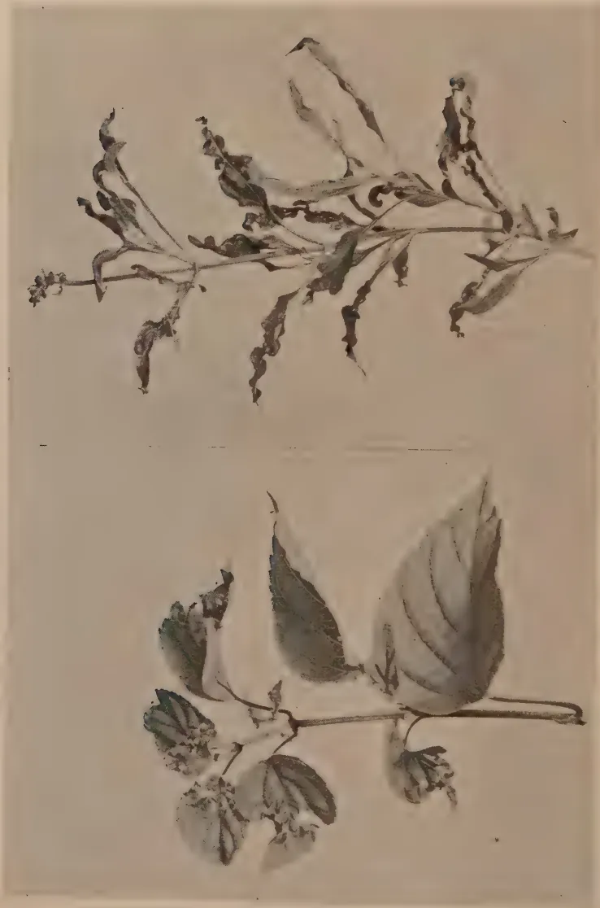
The image contains two botanical illustrations of a plant, likely a species of Salvia. The left illustration shows a branch with several large, ovate leaves. The leaves exhibit prominent dark, necrotic spots and some smaller, lighter-colored lesions, indicating a fungal or bacterial infection. The right illustration shows a branch with more severely affected leaves. The leaves are highly distorted, curled, and withered, with some appearing to be almost entirely blackened, which is characteristic of a viral infection such as Tobacco Mosaic Disease. The plant has a thin, upright stem with small, clustered flowers at the top.A Disease of Salvias
335C. H. GADD, D.Sc.,
MYCOLOGIST, TEA RESEARCH INSTITUTE OF CEYLON
SALVIA farinacea, which forms a prominent feature in many up and mid-country gardens, has of recent years become so seriously affected by a disease that its cultivation is reluctantly being abandoned in many gardens. The disease spreads steadily through the beds and causes the leaves to become unsightly and the flowering stalks dwarfed.
The first indication of the disease is always to be found in the young expanding leaves. They are usually somewhat dwarfed and always mis-shapen, being twisted or curled. As the leaf opens from the bud, small blackish brown spots are to be seen on the leaf blade, but as the blade expands the discoloured areas drop out leaving small holes. The perforated leaves are characteristic of the disease. Distortion results from the uneven expansion of the leaf owing to the presence of dead areas which become holes. Leaves fully expanded before the disease starts never develop any of these symptoms.
S. farinacea is normally propagated in Ceylon by splitting the root stock and it has been a common experience that where plants from a diseased bed are used for cuttings the resulting plants are heavily diseased. Moreover casual observation indicated that a plant which had acquired the disease rarely, if ever, recovered. This observation was later found to be incorrect as cuttings from diseased plants will develop healthily if protected from certain insects.
Similar symptoms have also been observed on other species of salvia particularly the scarlet and blue bush varieties. These are also commonly propagated from cuttings and affected bushes as a rule steadily become worse without any sign of recovery.
These casual observations gave rise to the view that the disease possibly was of virus origin. A virus disease of salvias
336has been described in America, but its symptoms differed in some respects from those observed in Ceylon, particularly as regards the perforation of the leaf which is characteristic of the Ceylon Salvia disease.
Mr. T. H. Parsons, Curator of the Royal Botanic Gardens, Peradeniya, kindly supplied me with seed obtained from disease-free plants under the names S. (pseudo) coccinia and Scarlet Salvia (S. splendens). These were germinated and planted in pots in the laboratory where they developed into normal healthy seedlings. Numerous attempts were made to infect these seedlings in various ways with sap from diseased S. farinacea and scarlet salvia plants, but all attempts failed. Other attempts were made to transmit the disease by means of aphids and white flies collected after feeding on diseased specimens, but also without success. The plants used in these experiments continued to produce normal leaves with no indication of disease. Six weeks later they were cut back. The new shoots which were produced later were healthy and remained so until the plants were discarded.
While the above experiments were in progress a few scarlet salvia plants, which for some time had produced diseased leaves only, developed a few normal leaves. These leaves remained normal though later-formed leaves became distorted. Nearby plants of S. farinacea did not produce any normal leaves at that time. The observation on the scarlet salvia plants, however, suggested that the disease symptom was not as permanent as had been imagined and that the observed symptoms might be the result of injuries made by a large sucking insect.
Later, a green Capsid bug* was observed resting on a leaf of a scarlet salvia plant. This was caught and a search made for others, but only two more were found. These three insects were allowed to feed on fully expanded leaves of scarlet salvia seedlings. All bugs died within 48 hours although they were observed to feed. No injury was observed to occur on the leaves on which the insects had fed and the later growth of the seedlings was healthy.
*Kindly identified by Mr. G. M. Henry, Colombo Museum, as Lygus viridanus Moteh.
337The next 3 Capsid bugs caught were placed in an insect breeding cage with three well-grown seedlings so that the insects had freedom to move about and feed where they wished. Two days later the bugs were dead and were removed from the cage. The terminal bud of each plant was injured, and the typical blackish brown spots could be seen on the outer leaves. On expansion, these leaves became distorted and perforations appeared where the spots had occurred. In short, the plants exhibited the same symptoms as observed in nature. Leaves which expanded during the next 17 days were normal and remained so, but at the end of that period the terminal buds were again observed to be injured as before. The injury this time was found to be associated with the presence of young, very immature bugs. These evidently were the offspring of the bugs originally put in the cage.
This experiment has been repeated on several occasions with similar results, and in no instance have the symptoms of the disease failed to develop when the Capsid bugs have been allowed free access to the growing shoots. The first indication of bud injury could usually be observed about 24 hours after introducing the Capsid bugs. The adult bugs failed to survive more than 4 or 5 days, but all leaves injured in the bud during that time became distorted and perforated, whereas leaves developed in the absence of the adult bugs or their offspring expanded normally. In those experiments in which the young were allowed to remain to feed on the seedlings the injuries were very severe and growth became stunted.
All plants which had been attacked by Capsids during the course of these experiments were later cut back below the damaged leaves and protected against further attack. In all cases the later growth was normal and healthy.
At the same time root cuttings of severely diseased S. farinacea were made and protected against insect attack. A number of the cuttings failed, but all that struck developed healthy undistorted leaves. This proved that the disease is not carried in the root stock as was originally suspected but is dependent upon external agencies.
The above experiments clearly indicate that the symptoms observed in the gardens are the result of attacks by this
338particular insect and that the problem of control is an entomological one. No attempt has been made by the writer to study the life history or bionomics of this insect. During the above experiments it was ascertained that the female deposits her eggs below the epidermis of the leaf petioles as a rule. On hatching, the young are very active; they run up and down the stems but feed on the terminal or lateral buds where they cause severe injury.
The adults are very active and leave the plants on which they may be resting as soon as they are disturbed. The flight is rapid and so escapes notice particularly if there are a few flies of various sorts on the plants as is usually the case. At no time were the adult Capsid bugs abundant on the affected plants, but it will be realized that a free-moving insect like this can do considerable damage by feeding on different buds. Nor have young bugs been found abundantly. More have been seen on the plants used in the experiments than have been found on the more numerous plants in the garden. This raises the question whether the eggs are not more frequently deposited in nature on other species and that the damage to Salvias is done mainly by the adults. Similar injuries have been observed on other plants belonging to other genera than Salvia (e.g., Crotalaria usaramoensis), but without further investigation one cannot state with certainty that they have been caused by the same species of insect.
Not all species of salvia are attacked. S. leucantha, the blue-flowered species with white hairy stems and lower leaf surfaces, has not been observed to be attacked though growing in close proximity to S. farinacea. Possibly the hairy nature of the young shoots affords protection. It was noted during experimental infection that the relatively glabrous S. splendens was as a rule more severely affected than the more hairy S. pseudo coccinea. S. patens has not been found to be attacked.
I am indebted to Mr. C. A. Loos for the accompanying photographs illustrating the symptoms as they typically occur in nature on S. farinacea and Scarlet Salvia, and for the care with which he supervised the experiments here described.
339C. N. E. J. de MEL, B.Sc. (Hons.), B.Sc., Agric. (Lond.), Dip.
Agric. (Wye),
PRINCIPAL, FARM SCHOOL, PERADENIYA
IT is unusual in this Island to grow mud paddies except under irrigation. Rice cultivation on dry lands is entirely restricted to varieties of hill paddy (eluvi). The first attempt to grow a mud paddy on dry land at Peradeniya was made on this station during the maha season 1935-36. The degree of success which attended this attempt led to continued trials each season. In this article are discussed the conditions which appear necessary for successful cultivation of a mud paddy on dry land in the absence of irrigation facilities.
Trials have so far been restricted to two pedigree selections which were originally obtained from the Eastern Province. The paddies selected for trial were Vellai Illankalayan, pedigree selection No. 28061, for the maha season, and Pachchai perumal, pedigree selection No. 2462 11, for the yala season. Vellai Illankalayan is a four-months' paddy in the Eastern Province, where it is known to yield up to 60 bushels per acre under good cultivation. Pachchai perumal is a three-months' paddy yielding up to 50 bushels per acre, although 40 bushels per acre may be considered a good average yield.
The first trial with this pedigree selection was made during the maha season 1935-36 on plot 180. The soil was sandy, and was under cowpeas during the preceding four months. After harvesting the pods, the cowpea plants were ploughed in early in October, 1935. On the 23rd October, after an application of 2 cwt. of Nicifos No. 2, four bushels of paddy were broadcast on an extent of 1.8 acres. Fifty per cent. of
Rainfall in inches.
Graph 1.
Var. VELLA-ILLANKALAYAN.
MAHA SEASON CROPS, 1935 - 1936.
1936 - 1937.
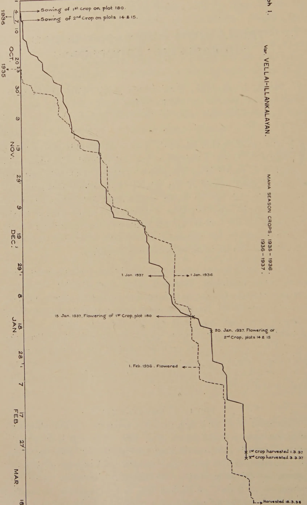
The graph displays rainfall data for two crops in the Maha Season of 1935-1936 and 1936-1937. The y-axis represents rainfall in inches, ranging from 0 to 40. The x-axis shows the months and days from October 1935 to March 1937.
Key Events and Annotations:
Approximate Rainfall Data (in inches):
| Date | 1st Crop (Solid Line) | 2nd Crop (Dashed Line) |
|---|---|---|
| Oct 7, 1936 | ~4 | - |
| Oct 10, 1936 | ~4 | ~4 |
| Oct 20, 1936 | ~10 | ~10 |
| Oct 23, 1936 | ~15 | ~15 |
| Oct 30, 1936 | ~20 | ~20 |
| Nov 9, 1936 | ~25 | ~25 |
| Nov 19, 1936 | ~28 | ~28 |
| Nov 29, 1936 | ~30 | ~30 |
| Dec 9, 1936 | ~32 | ~32 |
| Dec 19, 1936 | ~35 | ~35 |
| Dec 29, 1936 | ~38 | ~38 |
| Jan 8, 1937 | ~40 | ~40 |
| Jan 15, 1937 | ~40 | ~40 |
| Jan 20, 1937 | ~40 | ~40 |
| Jan 28, 1937 | ~40 | ~40 |
| Feb 1, 1937 | ~40 | ~40 |
| Feb 17, 1937 | ~40 | ~40 |
| Feb 27, 1937 | ~40 | ~40 |
| Mar 18, 1937 | ~40 | ~40 |
the plants were in flower on 1st February, 1936. The crop was harvested on 18th March, 1936, and yielded 24.9 bushels per acre. It was observed that the period of maturity was longer than the period in the Eastern Province by nearly four weeks.
During the maha season, 1936-37, the same pedigree selection was grown on plot 180, but on acres where the soil varied from a sandy loam to a light sandy soil. During the yala months, April to August, 1936, this area was under a mixed green manure crop of Crotalaria anagyroides and Tephrosia candida which were slashed and ploughed in. On this occasion the paddy seed was drilled in by the Indian seed drill in rows one foot apart after an application of Nicifos No. 2 at the rate of cwt. per acre. The plants flowered in middle January, 1937, and the crop was harvested on the 1st March, 1937. The yield was 138.75 bushels or 36.9 bushels per acre.
During the same season the same variety of paddy was drilled on plots 14 and 15, two acres in extent. This area had been limed in March, 1936, as a corrective for soil acidity, and was subsequently under a crop of sunn hemp (Crotalaria juncea). This crop was slashed early in September, 1936, and ploughed in after a further application of 1 ton of lime per acre. On 1st October, 1936, the plots were disc-harrowed after applying ten tons of compost manure per acre. On the 7th October, 1936, Nicifos No. 2 was broadcast at 1 cwt. per acre and seed was drilled in at 1.5 bushels per acre in rows one foot apart. The plants were in flower on the 20th January, 1937, and were harvested on the 3rd March, 1937, giving the very satisfactory yield of 48.75 bushels per acre.
Table I shows the distribution of the rainfall during the periods of growth of the three crops mentioned above. Graph I shows the cumulative amounts as well as the daily amount of rainfall which these crops received on any given date during their period of growth. The two crops drilled respectively on plot 180 on the 4th October, 1936, and on the two contiguous plots 14 and 15 on the 7th October, 1936, received identically the same amount of rain. One curve is therefore used for both these crops, and the respective dates of flowering and harvesting are marked on the curve. The second curve represents the rainfall during the maha season, 1935-36.
342TABLE IMAHA SEASONRainfall| Plot No. | Date of Sowing | October Inch Days |
November Inch Days |
December Inch Days |
January Inch Days |
February Inch Days |
March Inch Days |
Date of Flowering | Date of Harvesting | Period of Maturity Mth. Days |
Area sown, acres |
Total yield, bushels |
Yield per acre, bushels |
|||||||||
|---|---|---|---|---|---|---|---|---|---|---|---|---|---|---|---|---|---|---|---|---|---|---|
| 180 | Broadcast 23-10-35 |
2.07 | 5 | 12.57 | 19 | 10.42 | 18 | 4.75 | 11 | 4.55 | 5 | 4.17 | 7 | 1-2 | 36 | 8 | 3-36 | 4 | 26 | 1.8 | 44.75 | 24.9 |
| 180 | Drilled 4-10-36 |
6.76 | 17 | 6.83 | 17 | 10.29 | 14 | 7.79 | 13 | 3.67 | 5 | — | — | 15 | 1 | 37 | 1-3-57 | 4 | 28 | 3.75 | 138.75 | 36.9 |
| 14 & 15 | Drilled 7-10-36 |
6.75 | 16 | 6.83 | 17 | 10.29 | 14 | 7.79 | 13 | 3.67 | 5 | — | — | 20 | 1-37 | 3-3-37 | 4 | 26 | 2 | 97.5 | 48.75 |
Rainfall in inches.
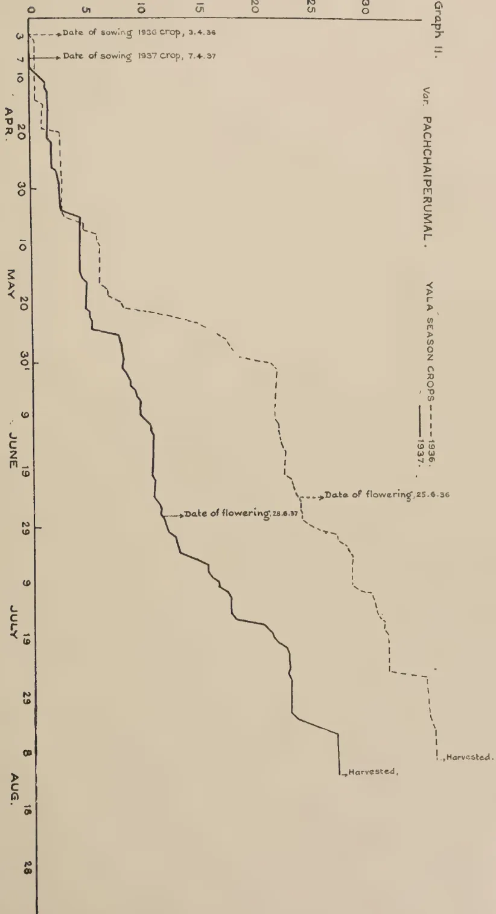
The graph displays rainfall data for two consecutive years, 1936 and 1937, for two different crops. The x-axis represents time from April to August, with specific dates marked. The y-axis represents rainfall in inches, ranging from 0 to 30. The 1936 crop (dashed line) shows a peak in rainfall of approximately 25 inches in late June. The 1937 crop (solid line) shows a peak of approximately 15 inches in late June. Both crops show a significant increase in rainfall starting in late April and continuing through the summer months.
| Date | 1936 Rainfall (inches) | 1937 Rainfall (inches) |
|---|---|---|
| 3.4.36 (Sowing) | 0 | 0 |
| 7.4.37 (Sowing) | 0 | 0 |
| 25.6.36 (Flowering) | 25 | 15 |
| 28.6.37 (Flowering) | 15 | 15 |
| 8.8.36 (Harvest) | 25 | 15 |
| 18.8.37 (Harvest) | 15 | 15 |
Graph II.
Var. PACHCHAIPERUMAL.
YALA SEASON CROPS --- 1936. — 1937.
APR.
MAY
JUNE
JULY
AUG.
344PACHCHAIPERUMALThe first crop of Pachchaiperumal was obtained in yala, 1936, on plot 20, and yielded 25.25 bushels per acre. The plot was limed to correct acidity and 4 tons of compost were applied during cultivation. Paddy seed was drilled in rows one foot apart after the application of 2 cwt. of Nicifos No. 2 and cwt. of sulphate of potash. The seed rate was 1.5 bushels per acre. The plants were fifty per cent. in flower on the 26th June, 1936, and the crop was harvested on the 12th August, 1936. The crop sustained some damage from the paddy bug (Leptocorisa varicornis) which appeared in large numbers, and also from frequent heavy showers during the period of flowering. On threshing a high percentage of empty seed was found.
This variety of paddy was repeated on plot 180, a sandy loam, during the yala season, 1937. The extent was 3.75 acres, and the land had been previously under turmeric, ginger and sweet potatoes. The land received an application of 5 tons of compost per acre and later cwt. of Nicifos No. 2 and cwt. of steamed bone meal per acre. This plot proved very weedy, especially due to the presence of the troublesome weed kora (Cyperus rotundus). The plants came into flower about the 28th June, 1937. Large numbers of paddy bugs were caught and destroyed. The crop was harvested on the 30th August, 1937, and yielded 39.25 bushels, or 10.5 bushels per acre. The causes for this low yield, apart from the damage by paddy bug, are commented on below.
Table II shows the distribution of the rainfall during the growth of these two crops, while graph II shows the cumulative and also the daily rainfall during the same periods.
345TABLE IIRainfallYALA SEASON| Plot No. | Date of Sowing | April Inch Days |
May Inch Days |
June Inch Days |
July Inch Days |
August Inch Days |
Date of Flowering | Date of Harvesting | Period of Maturity Mth. Days |
Area sown in acres | Total yield in bushels | Yield per acre bushels |
|---|---|---|---|---|---|---|---|---|---|---|---|---|
| 20 | Drilled 3-4-36 |
2.60 7 |
18.69 23 |
4.23 16 |
10.02 23 |
0.68 7 |
25-6-36 | 12-8-36 | 4 10 |
1 | 25.25 | 25.25 |
| 180 | Drilled 7-4-37 |
3.98 15 |
5.49 14 |
3.93 22 |
10.91 25 |
4.16 6 |
28-6-37 | 13-8-36 | 4 7 |
3.75 | 39.25 | 10.5 |
An examination of tables I and II along with the corresponding rainfall curves shows that the factor which decides the success of a crop of mud paddy under unirrigated conditions is the rainfall. The amount of rain received by the crop and its distribution are equally important. The flat portions of the curves represent periods of no rain. In the maha season crops 1936-37 the periods without rain are short, and occurred at such stages of the growth of the crops that they did not affect the crops adversely. The two crops of this season not only received a fair amount of rain, but they also benefited by the distribution of the rain.
The total amount of rain received by these crops was 35.34 inches. The maha season crop 1935-36 received a total amount of 38.53 inches of rain. But the distribution was not, on the whole, so favourable. The rainfall curve for this crop shows that an almost continuous dry period extending over 33 days, broken only by two good showers amounting to less than 4 inches of rain, preceded the flowering of this crop. This is reflected in the difference in the yields of the two crops obtained on plot 180 in the two maha seasons (vide table I). The lack of moisture in the soil definitely affected the nutrition of the paddy plants and consequently the formation of seed.
The yala crops of both 1936 and 1937 suffered from a deficient rainfall as well as from its unequal distribution. The 1936 yala crop drilled on 3rd April of that year was at first exposed to practically drought conditions relieved by 1.59 inches of rain on the 20th April and followed again by an entirely dry period of 13 days before the first shower of May. The May rainfall revived the crop with several good showers between the 6th and 10th of that month. The crop was 50 per cent. in flower on the 25th May, and this period coincided with a period of continuous rainfall from the 19th to the 31st May of 0.15, 1.15, 0.31, 1.77, 2.43, 1.91, 1.09, 1.38, 0.56, 0.21, 0.42, 0.29, 3.08 inches on the successive days. As a consequence, setting of seed was affected and a large quantity of empty seed resulted. Though the month of June followed with only 4.23 inches of rain in light showers, the moisture in the soil as a result of the rainfall in the latter half of May
347maintained the growth of the crop which might otherwise have resulted in the seed not fully forming. However, this crop contrasts with the 1937 yala crop in that the rainfall conditions were far less adverse, and the yield of 25.25 bushels per acre was not unsatisfactory compared with the performance of Pachchaiiperumal paddy in other parts of the Island under irrigation.
The 1937 yala crop which was drilled between the 5th and 7th April similarly grew under almost drought conditions. Drilling followed rain on the 3rd and 4th April of .61 and .68 inches respectively. During the next twenty-three days of April a total of 2.69 inches of rain fell on 13 days, 1.28 inches of this falling on the 10th and 11th April. The month of May had a total of 5.49 inches over 14 days, of which 1.53 inches fell on the 5th May and 2.23 inches on the 26th May, while the long intermediate period of 21 days had 1.04 inches on 6 days. The rainfall curve illustrates these facts very clearly. The result was that growth was checked from the very start and the plants were thin and yellow. Tillering was very poor, and weed growth was troublesome. The July rainfall of 10.92 inches with a few heavy showers was of no special benefit to the crop, and the yield was only 10.5 bushels of good seed.
It would, therefore, appear that the vitality of the plant and its proper nourishment chiefly depend on the amount of moisture in the soil. A sufficient rainfall well distributed throughout the full period of growth, with mild showers only during the flowering period, may be considered to be the optimum conditions for the cultivation of mud paddy on unirrigated land. The first six weeks of growth and the periods before and after flowering are critical periods for the crop with regard to the rainfall.
Rainfall is seen to be the decisive factor, and this is only to be expected. The moisture-retaining capacity of the soil is a related factor. Its effect can be seen in the maha season cultivations on plot 180, and on plots 14 and 15. Plots 14 and 15 are clay loams, while the soil in plot 180 is in part sandy and in part a sandy loam. In the maha season, 1936-37, Vellai Illankalayan was sown on all three plots and grew under the
348same climatic conditions. The difference lay in the texture of the soil and in the treatment of the plots in preparation for cultivation. Apart from the amelioration of the soil with lime, plots 14 and 15 carried a heavier green manure crop, C. juncea, than did plot 180 on which C. anagyroides and T. candida were the green manures. Besides, plots 14 and 15 received an additional ten tons of compost. The difference between the yields of these plots was 11.85 bushels per acre. This difference was doubtless largely due to the superior manurial value of the material ploughed into plots 14 and 15, but it is also considered that the greater moisture-retaining capacity of the soil of these plots enhanced by the effects of the compost were also in some measure responsible for the higher yield. Further trials on these plots were expected to demonstrate this inference more conclusively. The very poor yield from plot 180 in the yala season, 1937, has also partly to be attributed to the poor moisture-retaining capacity of the soil in this plot.
In India drilled paddy has been successfully grown under a rainfall of 35 inches per annum in the Broach district. This is achieved by proper soil management. Ploughing to a depth of 4 inches to 6 inches followed by repeated harrowing, the application of farmyard manure, and light intercultivation to prevent loss of moisture from the soil are practised. The problem is one of retaining moisture in the soil.
Both varieties of paddy have taken a longer period to mature under the conditions of these trials than when grown under irrigation. Pachchai perumal, a three-months' paddy on irrigated fields, has taken up to 4 months and 10 days; Vellai Illankalayan, a four-months' paddy, has taken 4 months and 26 days, whether broadcast or drilled. It is known that transplanted paddy takes longer to reach maturity, the extra period varying appreciably with the distances apart of transplanting. This is considered to be due partly to the greater spacing of the plants. The same effect could have been expected between seed broadcast and drilled. Reference to table I shows that under the conditions of the trials now described the one instance of broadcasting has made no difference to the period of maturity compared with the drilling.
349Although the climatic conditions that prevailed in both yala seasons under reference were adverse to the crop, the yield of 25.25 bushels of Pachchaiperumal in 1936 shows that it is suitable for growing on dry land without irrigation. Vellai Illankalayan proved eminently suited for the purpose.
It may be concluded that mud paddies can be cultivated on dry lands in the absence of irrigation facilities under the conditions discussed above. This is worthy of trial as it is a potential method of increasing the output of paddy in this country where the required conditions of soil and rainfall are obtained in many districts.
350C. R. KARUNARATNE, Dip. Agric. (Poona),
AGRICULTURAL INSTRUCTOR, KATUGASTOTA
MIXED cultivation is perhaps the most general form of cultivation practised in village holdings in the Central Province. Cocoa, coffee, jak, arecanuts, coconuts, kitul, sapu, kekuna, plantains, kapok, vegetables, etc. grow together in a haphazard fashion; most of the village holdings in the Katugastota Range are of this type. It would appear that the possibility of introducing on an extensive scale annual crops requiring no shade is rather remote. Ginger and turmeric, however, can be grown under medium shade and these two crops can therefore be cultivated extensively in the mixed gardens in Harispattu.
During the last few years special efforts have been made to stimulate and extend the cultivation of ginger and turmeric in these village holdings. The results have been encouraging. Practically every village garden has a few plants for domestic uses. Ginger is extensively cultivated in the Kandy district, particularly in villages between Kadugannawa and Peradeniya, and is one of the most paying minor crops. The cultivation of ginger in the Katugastota Range was rapidly spreading but received a severe check during the severe drought in 1935, followed by the malaria epidemic when all available ginger was used up for the preparation of medicines, etc. The subsequent price of ginger, which rose from Rs. 2.50 to Rs. 80.00 per cwt., prevented the villager from growing it owing to the high cost of seed ginger. The cultivation of turmeric is, however, quite popular with the average villager.
351Gravelly, stony or stiff clay soils are unsuitable for these two crops; deep free working loamy soils are best. The cultural operations for both are similar. Rainfall is of little importance if irrigation is possible. Ginger and turmeric are extensively cultivated in the Poona District in India under irrigation with a rainfall of only about 25 inches per annum distributed chiefly from June to October.
Ginger and turmeric are well suited for mixed cultivation. The long upright turmeric leaves stand above the level of the ginger and thus get abundant light and air. They give to the ginger beneficial shade. Turmeric as a mixed crop with ginger gets the same treatment as the latter. Cultivation is identical.
The secret of success in cultivation is to have a friable, loose layer of soil to a depth of at least five inches in which the rhizomes can form easily. The soil should be turned over to a depth of nine to twelve inches about two months prior to planting, and left exposed to weathering. Level contour drains should be cut and the excavated soil banded up on the upper side and well rammed down to form effective embankments against erosion. Any wash which may take place is caught up at the bund and thus starts the formation of terraces. The distances between drains will depend on the slope. The second turning of the soil should be done about two months later. A third turning over and the final preparation of soil are done soon before planting. If the land is free from stumps and sufficiently level to admit implements, it is more economical to do the preliminary tillage operations with the plough and the harrow.
A well-drained soil is essential for these crops, especially on flat lands. In such cases the land may be prepared in three different ways: (a) The bed method where beds 12 ft. 6 ft. are made. (b) Ridge and furrow method in which the ridges are made 24 inches apart with a furrow between them; the rhizomes are planted on the sides and top of the ridges. (c) The broad ridge method where ridges with flat tops 3 to 4 feet wide with an 18-inch furrow between them are prepared.
352The ridges and furrows can be constructed with a plough. Ginger and turmeric can be grown together, as mixed crops, with yams as a subsidiary crop. The ginger can be planted along the borders of the beds or broad ridges, 12 to 15 inches apart. If the crop of ginger is planted on the slopes of hills as is usually done in the Kandy district, the turmeric can then be planted along the bunds of the drains or in contour rows about 15 to 20 feet apart.
It is a common practice for cultivators to grow Dioscorea yams at the foot of trees so that the vine can be trained to twine round them. Dioscorea and Colocasia yams can be grown as subsidiary crops in a mixed field of ginger and turmeric. The yams can be grown at the ends of the beds and broad ridges or spaced 15 to 20 feet apart. The creeping varieties can be trained on supports of bamboos, arecanuts or jungle posts. This system of cultivation of ginger, turmeric and yams mixed has been successfully demonstrated at the Nugawela Ginger Station (see Plate I). In the Kandy district, owing to the scarcity of spare land for village expansion, intensive cultivation on the lines suggested should be remunerative.
Good plump rhizomes from the previous crop with two or three eyes or buds are used for planting. The method practised by the villager is to plant large whole hands (about 3 ins. by 5 ins.). By this method of planting, the hands that develop from a single set are small in size and are bunched together with numerous small fingers. This is disadvantageous for curing. The bunches that develop from small sets, on the other hand, appear to be larger in size, are much less bunched together and separate easily. They are decidedly superior to the bunched hands for curing. 1,200 to 1,500 lb. of seed ginger are required to plant an acre. In the Kandy district, ginger is best planted about the middle of March. After planting the main crop, the subsidiary crop may be planted. The whole area should next be covered with a thick mulch of dried leaves, paddy husks or straw. A mulch of straw at the rate of about 4,500-5,000 lb. per acre has been found to be
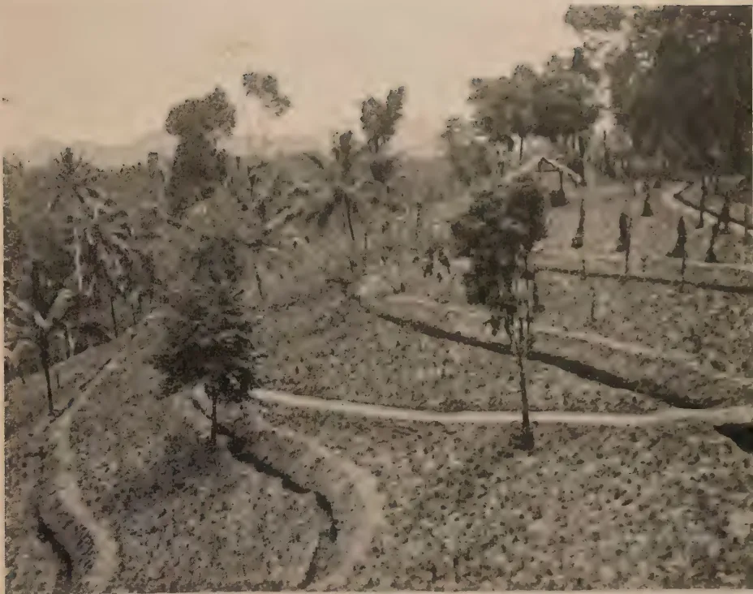
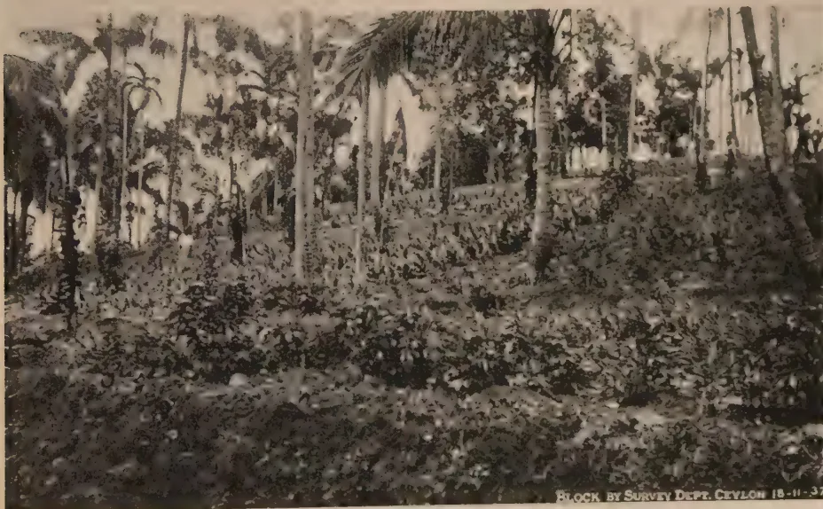
PL. 00K BY SURVEY DEPT. CEYLON 18-11-37
Plate I.—Nugawela Ginger Station
This image is a scan of a blank page. The background is a uniform light beige or tan color. There are a few very small, dark specks scattered across the surface, which appear to be scanning artifacts or dust particles. No text, lines, or other graphical elements are present. 353very effective. This serves not only to conserve the moisture in the soil and to check weed growth but the chemical and physical effects of the decomposed straw increase the yield of the crop. When the market is good, mulching with straw and manuring with artificials have been found to be remunerative. A mixed fertilizer is advisable but an application of 200 lb. per acre of sulphate of potash or muriate of potash alone will be beneficial if followed by straw mulching.
Two weedings are essential, but a third may be necessary.
Normally, ginger is lifted in December-January. When the crop is ready the leaves start drying up. Harvesting can be delayed if rainy weather interferes. Small holders as a rule do not lift the entire crop at once. The harvesting is done in stages according to the market fluctuations. Ginger can be stored for a long time in a cool, well-ventilated room. Before storing, the rhizomes should be sorted and any decayed portions rejected. The ginger is then built up in heaps to 3 feet in height. The heaps are covered with ginger or turmeric leaves which are sprinkled with water. The heaps are examined once a fortnight or oftener. If the ginger at the middle is found to be heated, the heap is broken up and any decayed or rotten pieces removed. After three or four days the ginger is again heaped up. During very hot weather the stored ginger should be carefully examined regularly. The prompt removal of decayed pieces is absolutely necessary. Ginger can be stored in this manner for 7 to 8 months. During storage, the ginger loses weight and also a certain proportion may get rotten. This loss may be as much as 40 per cent. when it is not carefully stored, but is usually about 20 per cent.
Normally the yield is about four fold, but with good cultivation and manuring six to eight fold can be expected.
The cost of cultivation of an acre of ginger is about Rs. 225.00. The cost of seed ginger has to be added and may be Rs. 300.00 or more depending on the prevailing price of raw ginger.
354COST OF CULTIVATION OF AN ACRE OF GINGER| Men @ 50 cts. per day |
Women @ 30 cts. per day |
Rs. Cts. | Rs. Cts. | |
|---|---|---|---|---|
| 1. Clearing shrub jungle .. | 10 00 | |||
| 2. Contour draining, 24" × 18" with all earth bunded on the upper side and rammed in, 28 chains @ 60 cts. per chain .. |
16 80 | |||
| 3. Turning over soil : 1st turning @ 35 cts. per square of 25' × 25' .. .. |
24 50 | |||
| 2nd turning @ 25 cts. per sq. | 17 50 | |||
| 3rd turning and crushing clods @ 25 cts. per sq. .. .. |
17 50 | 59 50 | ||
| 4. Marking with the marker for planting .. .. |
2 | 1 00 | ||
| 5. Planting ginger : Holing .. | 8 | 4 00 | ||
| Planting .. | 6 | 1 80 | ||
| Covering .. | 6 | 3 00 | 8 80 | |
| 6. 1,500 bundles of straw @ Re. 1.50 | 22 50 | |||
| Spreading straw .. | 1 | 2 | 1 10 | |
| 7. 3 weedings @ Rs. 15.00 per weeding .. .. |
15 00 | |||
| 8. Harvesting : Digging the crop | 15 | 7 50 | ||
| Cleaning and trans- porting .. |
40 | 12 00 | 19 50 | |
| 9. Rent of land for one year .. | 10 00 | |||
| 10. Construction of temporary watch hut, cost of tools, etc. .. |
15 00 | |||
| 11. Wages for a watcher for 3 months .. .. |
45 00 | |||
| 224 20 |
A ratoan crop of ginger is obtained by leaving in the soil from year to year a portion of a rhizome containing an "eye." This develops in the normal way giving rise to a crop in the next season. Ratoon ginger is smaller and more fibrous than an ordinary crop and deteriorates steadily from year to year,
355CURING OF GINGERIf the crop is to be cured it should be lifted in stages and not all at once. A good supply of clean water and a continuous spell of dry weather are essential for successful curing. If ginger in the curing stages is exposed to wet conditions, it becomes dark in colour, mildew develops and may give a musty odour and bad flavour. February and March, which are usually dry, are suitable for curing. It is best to harvest at one time only the quantity that can be dealt with on the same day. The ginger, after the removal of the fibrous roots and the adhering earth, is thrown into a tank of water and thoroughly washed. The water is then drained off and the ginger allowed to soak in a fresh supply of clean water. The soaking facilitates the removal of the outer skin which is scraped off with pieces of bamboo improvised as knives. Special knives for peeling ginger have been made. These consist of a thin iron blade about half an inch broad at the base and tapering to about a tenth of an inch at the tip and about four inches long. One face of the blade is flat, while the other has a bevelled edge. The knife scrapes but does not cut. It has the advantage that it can scrape in either direction.
The operation of peeling is a delicate one if carried out in the proper manner, the object being to remove the skin without destroying the cells immediately below it as these cells contain much of the oil on which the aroma of the best quality of ginger depends. As the rhizomes are peeled they are thrown into water and washed. The more carefully the washing is done the whiter will the resulting product be. The peeled ginger is allowed to remain in water overnight. The following morning it is washed again in lime water. The lime water should first be strained before introducing the ginger into it. The quality of the lime makes a difference in the appearance of the finished product. The purer the lime the better the product. One bushel of lime has been found to be sufficient for 3 cwt. of raw ginger. Ginger treated with lime keeps better. After treatment it is spread out on sacks or coir matting or on a cement barbecue to dry in the sun. It should be turned over frequently whilst being dried, particularly on the first day, to ensure uniform drying. The
356drying should proceed for 5 to 6 days accompanied by frequent turning. If the ginger is not sufficiently white in appearance, it should be bleached again by washing in water and drying again for a further period. Ginger should not be bagged until it is thoroughly dried or it is liable to become mouldy. Six pounds of green ginger will produce one pound of cured ginger. When thoroughly dried, ginger should be rubbed on a coarse sacking, to remove any skin not previously removed by scraping. The peeling may be rough or clean; rough peeling is less expensive and suits the local demands. A woman can ordinarily rough peel about 25 to 28 pounds per day. The finished ginger is graded according to colour and size of the "hands."
The local variety of ginger is not very suitable for curing. It develops small hands and has generally numerous fingers which necessitate breaking the ginger into small pieces before curing. Peeling is difficult and expensive. Cochin ginger has fewer fingers, is less fibrous and more plump. Surat ginger is the best, being large and plump, and free from fibre, while its roots are easily removed and the cured product is of a good aroma, flavour and fracture.
The best rhizomes are reserved for seed. The rest are cleaned and the roots removed. Dry or green leaves of turmeric are placed inside a pan used for boiling the turmeric. The turmeric is then placed inside the pan and water poured into it until the level is about three inches below the rim of the pan. The pan is then covered with turmeric leaves and plastered with cowdung to prevent the escape of vapour. It is then boiled over a slow fire for about three or four hours and allowed to cool while standing over the fire. On cooling the plaster cover is removed and the water thrown away. The turmeric is then taken out and spread out in the sun to dry. It is collected at night and covered over to protect it from dew. While drying, it should be stirred over three or four times a day to ensure even drying. When thoroughly dry it should be trampled with the feet on a bed paved with rough stones to remove the outer skin when it will acquire the usual turmeric colour. The product is then ready.
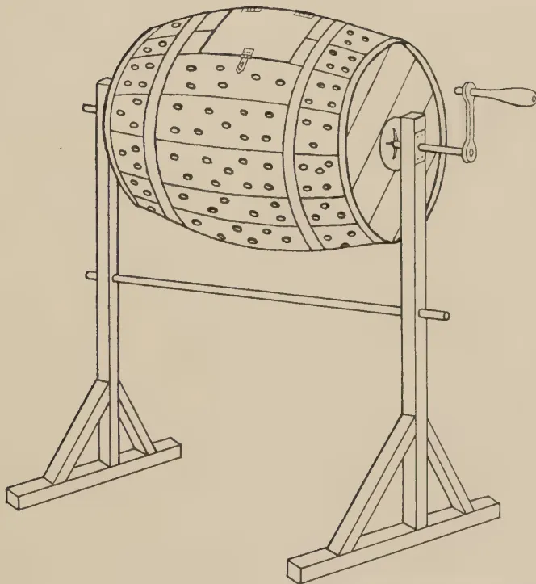
A detailed line drawing of a Turmeric Polisher. The device consists of a large wooden barrel, likely made of staves, which is mounted on a sturdy wooden frame. The frame is supported by two triangular legs. A horizontal rod connects the two legs, and a hand crank is attached to the right side of the barrel, allowing it to be rotated. The barrel itself has a series of small holes or perforations on its side, and a latch is visible on the top. The drawing is a technical illustration, showing the construction and components of the machine.Block by Survey Dept. Ceylon. 10. 11. 32.
Plate II.—Turmeric Polisher
358The process of rubbing on a rough surface is rather laborious and turmeric can be polished more economically by using a simple and cheap polisher (Plate II). This is made out of an empty cask with closed ends, fitted with an iron axle which runs through the cask. A wooden handle is attached at one end of the axle. A small door about nine inches long and six inches wide is provided on the barrel, and is fixed in position by means of two small hinges. The barrel is mounted horizontally on two wooden posts and is turned by means of the handle. About a dozen small wooden lugs are fixed on to the inside of the barrel to increase friction. Dry turmeric is put inside the barrel till it is nearly half full, and the barrel is rotated or swung to and fro in a semicircle. A few sharp stones placed inside the barrel helps the cleaning. It is convenient to bore small holes about a quarter of an inch in diameter for the escape of the dust. To intensify the colour some water may be sprinkled on the turmeric before the charge is ready. A polisher of this type can be made by a village carpenter or blacksmith at a cost of about Rs. 3.00.
This image is a scan of a blank page. The paper has a light beige or cream-colored tint. There are a few very small, faint dark spots scattered across the surface, which appear to be scanning artifacts or minor imperfections in the paper. No text, lines, or other markings are present.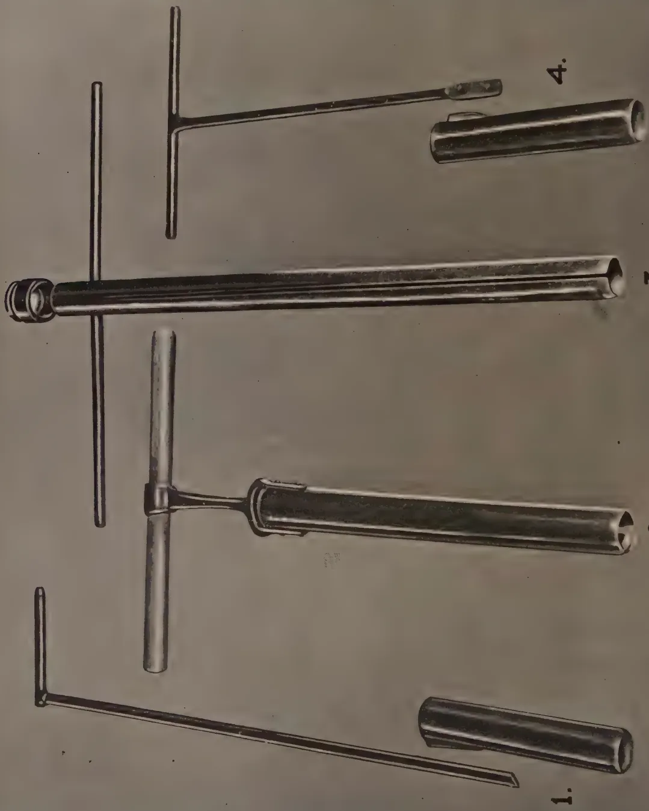
A technical drawing of four dental instruments, labeled 1, 2, 3, and 4. Instrument 1 is a long, thin probe with a T-shaped handle at one end and a cylindrical cap at the other. Instrument 2 is a probe with a T-shaped handle and a wider, flared cylindrical tip. Instrument 3 is a long, straight probe with a T-shaped handle and a small circular opening at one end. Instrument 4 is a probe with a T-shaped handle and a small, rounded tip. The instruments are shown in a perspective view, highlighting their metallic construction and various shapes.4.
3.
2.
1.
PLATE
Illegible text at the bottom right edge of the page.
359Contribution from the Coconut Research Scheme (Ceylon)W. V. D. PIERIS, M.A., Dip. Agric. (Cantab.), B.Sc. (Lond.),
GENETICIST, COCONUT RESEARCH SCHEME, CEYLON
THE usual type of soil-borer employed in Europe for taking samples down to a depth of 9 inches (top-soil) and 9-18 inches (sub-soil) does not work satisfactorily on the heavy soil types, encountered in the tropics, which tend to bake during dry weather. In the first place, it is very difficult and at times impossible to drive the borer into the soil by hand and, in the second place, if any extra force or pressure is applied to the handle from above or in a rotatory direction, either the handle snaps across or the handle-shaft breaks at its single welded union with the boring cylinder. The nature of the damage can be seen in figures 1 and 4 of the accompanying plate.
A more satisfactory borer with a double welded union between the handle-shaft and the boring cylinder is shown in figure 2. The superiority of this type of borer lies, firstly, in the fact that since the union of the handle-shaft with the boring cylinder is much stronger than in the former case, the borer can be rotated with greater force and, secondly, in the presence of the stout wooden handle, which is replaceable if damaged; but in this case too no pressure can be safely applied from above except manual force assisted by the weight of the operator.
It has, therefore, been found necessary to design a borer which has no weak points in its construction, such as a slender handle-shaft or welded joints, and which can be used for hand-boring as well as for driving into the soil by means of a heavy hammer.
Figure 3 shows a borer, designed by the author and made locally, which has turned out to be successful and which has,
360in fact, been favourably reported upon by Dr. M. L. M. Salgado, the Soil Chemist of the Coconut Research Scheme.
It will be seen that the borer has no separate handle-shaft, but is uniform in diameter throughout. The cylinder consists of a piece of stout steel tubing with the walls of the cutting end thick and ground to a knife-edge. The top-end of the cylinder is specially strengthened by having the walls thick; and a heavy steel cap fits over the top. A transverse hole through the strengthened top section of the cylinder is able to take a steel rod which can be used as a detachable handle for rotating the borer during withdrawal.
The chief advantage of this borer lies in the fact that it can be safely driven into the ground by means of a heavy hammer, provided that a wooden block is placed over the metal cap to take the blows or, at any rate, if care is taken to bring down the hammer square on the cap.
It can also be operated by hand alone in the case of light soils with much greater confidence than is usually experienced with the ordinary types of borer.
361G. HARBORD, Dip. Agric. (Wye)
AGRICULTURAL OFFICER
THE keen demand for cotton seed for sowing purposes for the 1937 crop encouraged the belief that the steadily increasing annual production of cotton would be maintained this year, and, although the total production fell somewhat short of the early estimate as a result of unfavourable rains in early April, yet the actual results obtained can be considered to be encouraging in that there was a distinct improvement both in acre yields and in the quality of the seed cotton; and because it was demonstrated that the present purchase price of seed cotton f.o.r. Colombo at Rs. 12.00 per cwt. was not uneconomic to the grower.
A quantity of 6 tons of Cambodia cotton seed specially selected from the previous year's crop and delivered from the Liyangahatota centre where superior crops were produced, was distributed in September from convenient centres as follows:
| Centre | Quantity of cotton issued Cwt. |
|||
|---|---|---|---|---|
| Bata-ata | .. | .. | .. | 50 |
| Middeniya | .. | .. | .. | 40 |
| Ambalantota | .. | .. | .. | 10 |
| Tissamaharama | .. | .. | .. | 20 |
| 120 | ||||
In the Hambantota District cotton is almost entirely grown in chenas and this season the greater part of the crop was sown during the latter part of October, while sowing was completed by mid-November. There was no undue delay in the arrival of the north-east monsoon rains and the distribution of rainfall during the growing period of October, November, December and January was satisfactory and ample for the crop. As regards pests, apart from minor outbreaks of leaf-roller which
362COTTON PURCHASE 1937| Division | Value | R. C. | Expenditure | 1937 | 1936 | ||||||||||||||||||||||||||||||||||||||||||||||||||||||||||||||||||||||||||||||||||||||||||||||||
|---|---|---|---|---|---|---|---|---|---|---|---|---|---|---|---|---|---|---|---|---|---|---|---|---|---|---|---|---|---|---|---|---|---|---|---|---|---|---|---|---|---|---|---|---|---|---|---|---|---|---|---|---|---|---|---|---|---|---|---|---|---|---|---|---|---|---|---|---|---|---|---|---|---|---|---|---|---|---|---|---|---|---|---|---|---|---|---|---|---|---|---|---|---|---|---|---|---|---|---|---|---|
| Southern | Received from the Spinning and Weaving Mills for 2,835 cwt. 2 qr. 1 lb. Grade I. Cotton .. |
34,026 11 |
1. Paid to Cultivators :—
|
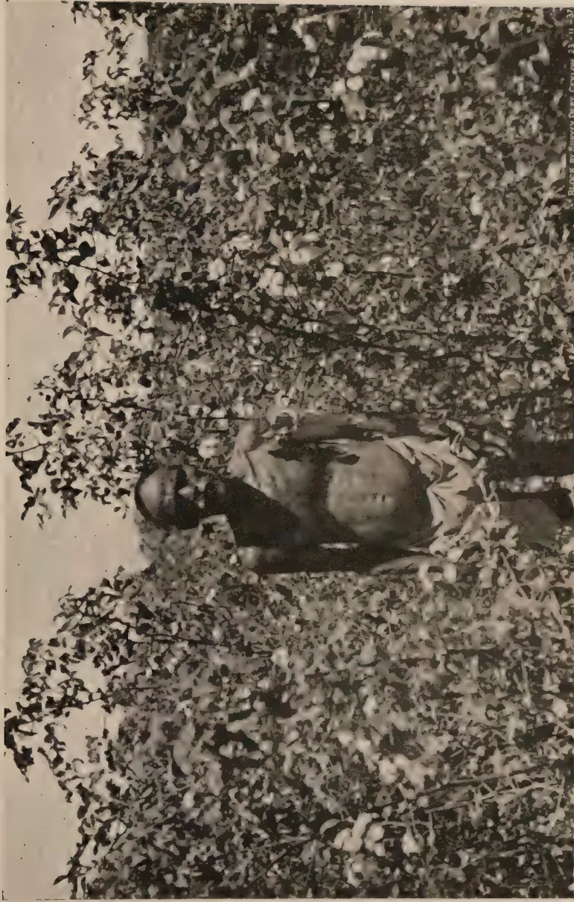
A black and white photograph of a man, identified as Don Simon of Siyambalatotta, standing in a field of dense, leafy vegetation. He is shirtless and wearing a light-colored cloth around his waist. The vegetation consists of many small, rounded leaves, possibly from a rubber tree. The background is a bright, clear sky. On the right edge of the photograph, there is a vertical text stamp that reads: "BLOCK by SUNNY DORE, CAYAN 23-11-37".Plate I.—Don Simon of Siyambalatotta
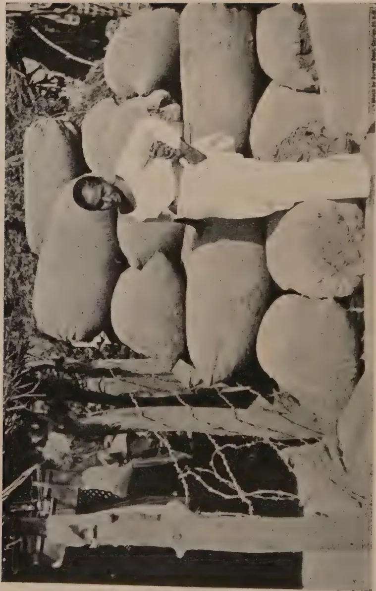
A black and white photograph of a man, identified as Gimarahamy of Dikwewa. He is standing in the center of the frame, facing slightly to the left. He has dark hair and is wearing a light-colored, short-sleeved shirt and dark trousers. He is positioned in front of a large, light-colored, cylindrical object that appears to be a stone or a large pot. The background is a rocky or wooded area with some sparse vegetation. The photograph is oriented horizontally on the page.Plate II.—Gimarahamy of Dikwewa
363COTTON PURCHASE 1937—(Contd.)| Division | Value | R. C. | Expenditure | 1937 R. C. |
1936 R. C. |
||||||||||||||||||||||||||||||||||||||||||||||||||||||||||||
|---|---|---|---|---|---|---|---|---|---|---|---|---|---|---|---|---|---|---|---|---|---|---|---|---|---|---|---|---|---|---|---|---|---|---|---|---|---|---|---|---|---|---|---|---|---|---|---|---|---|---|---|---|---|---|---|---|---|---|---|---|---|---|---|---|---|
| Central | Received from the Spinning and Weaving Mills for 644 cwt. 1 qr. 27 lb. Grade I. Cotton .. Received from the Spinning and Weaving Mills for 54 cwt. 3 qr. 11 lb. Grade II. Cotton .. |
7,733 89 547 58 |
1. Paid to Cultivators :—
|
3,314 70 1,181 93 509 68 1,188 25 632 01 344 54 60-3-05 31-4-08 Total 2. Transport 3. Gunnies 4. Miscellaneous Deficit debited to Cotton Purchase Fund Total Rs. 8,281 47 |
6,221 17 669 16 403 76 335 32 7,629 41 |
| Division | Value | R. C. | Expenditure | 1937 | 1936 | |
|---|---|---|---|---|---|---|
| R. C. | R. C. | |||||
| South-Western | ||||||
| Received from the Spinning and Weaving Mills for 241 cwt. 3 qr. 15 lb. Grade I. Cotton |
2,902 60 | 1. Paid to Cultivators :— | ||||
| Quantity | ewt. qr. lb. | Rate | R. C. | |||
| Received from the Spinning and Weaving Mills for 25 cwt. 2 qr. 10 lb. Grade II. Cotton |
102 35 | Embilpitiya | 219-2-15 | 10 50 | .. | |
| Do | 23-3-22 | 4 48 | .. | |||
| Timbolketiya | 19-2-11 | 10 50 | .. | |||
| Do | 1-2-08 | 4 48 | .. | |||
| Wijeriya | 1-3-08 | 10 50 | .. | |||
| Do | -1-10 | 4 48 | .. | |||
| 2. Transport | 2,657 23 | 2,199 46 | ||||
| 3. Miscellaneous | 200 29 | |||||
| 80 25 | ||||||
| 4. Excess credited to Cotton Purchase Fund | 2,937 77 | |||||
| 67 18 | ||||||
| Total Rs. | 3,004 95 | Total Rs. | 3,004 95 | |||
| Northern | ||||||
| Received from the Spinning and Weaving Mills for 218 cwt. 1 qr. 10 lb. Grade I. Cotton |
2,620 06 | 1. Paid to Cultivators :— | ||||
| Quantity | ewt. qr. lb. | Rate | R. C. | |||
| Kikirawa | 218-1-10 | 12 00 | .. | |||
| Transport Charges were met by the Cultivators | ||||||
| Cultivators | .. | .. | .. | |||
| Balance | .. | .. | .. | |||
| Total Rs. | 2,620 06 | |||||
| Total Rs. | 2,620 06 | Total Rs. | 2,620 06 | |||
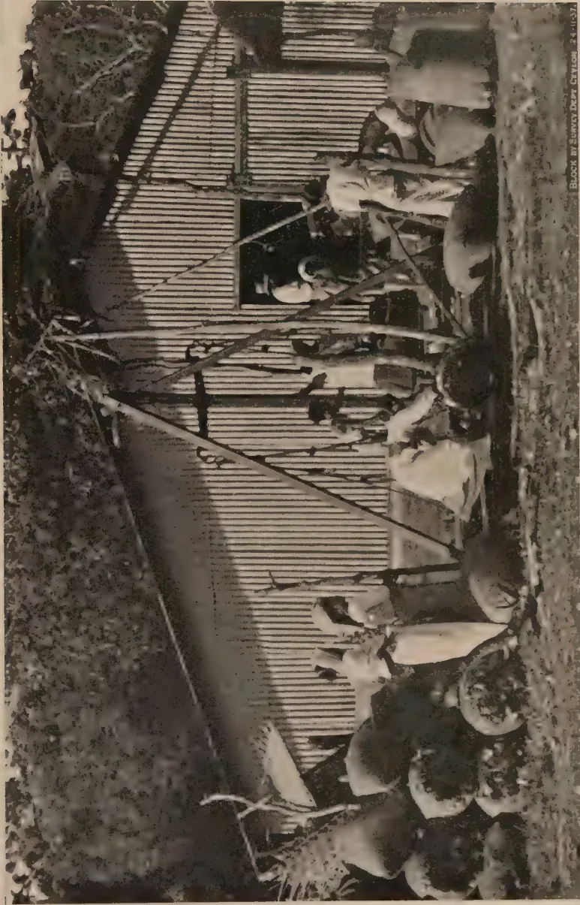
A black and white photograph showing several people, likely workers, gathered around a large, open-sided structure with a corrugated metal roof. They appear to be handling or processing cotton bales. The scene is outdoors, with trees visible in the background. The image is oriented horizontally on the page. In the bottom right corner of the image, there is a small vertical text: "BLOCK BY SUNNY DEPT. Ceylon 24-11-57".Plate III.—Cotton Purchase in Progress
This image is a scan of a blank page. The background is a uniform light beige or tan color. There are a few very small, dark specks scattered across the surface, which appear to be scanning artifacts or dust particles. No text, lines, or other graphical elements are present.365
COTTON PURCHASE 1937—(Contd.)
| Division | Value | R. C. | Expenditure | 1937 | 1936 | |
|---|---|---|---|---|---|---|
| R. C. | R. C. | |||||
| Eastern | Received from the Spinning and Weaving Mills for 6 cwt. 3 qr. | L. Paid to Cultivators :— | ||||
| 2 lb. Cotton | .. .. | 79 92 | Quantity | Rate | ||
| cwt. qr. lb. | R. C. | |||||
| Centre | 6-2-06 | 10 27 | .. | |||
| Lunugala | .. .. | Do | - 24 | 5 80 | .. | |
| 68 60 | ||||||
| 2. Transport | .. .. | 11 48 | ||||
| 80 08 | ||||||
| Deficit | .. .. | 16 | ||||
| Total Rs. | 79 92 | Total Rs. | 79 92 | |||
SUMMARY OF THE TOTAL AMOUNT PAID TO CULTIVATORS AT THE DIFFERENT DISTRICTS OF THE ISLAND
| 1937 | 1936 | |
|---|---|---|
| R. C. | R. C. | |
| Southern Division | .. 29,246 89 | .. 20,877 11 |
| Central Division | .. 7,171 11 | .. 7,629 41 |
| South-Western Division | .. 2,657 23 | .. 2,199 46 |
| Northern Division | .. 2,620 06 | |
| Eastern Division | .. 68 60 | |
| Total Rs. | .. 41,763 89 | .. 30,705 98 |
was evidently controlled by predatory wasps, crops throughout the district were little affected and not much damage was done by bollworm or stainers.
The period April 29th to May 10th was fixed for the cotton purchase at the same centres as in the previous season, i.e., Middeniya, Bata-ata, Liyangahatota, Hambantota and Tissamaharama. It was also decided to maintain the same purchase price as in the previous year, viz., Rs. 10.50 per cwt. at Bata-ata and Rs. 10.25 per cwt. at all other buying centres. In view of the increase in price of 40 per cent. paid last year, only a bare margin of profit could be shown in the balance sheet for the Cotton Purchase Scheme. Nevertheless, every endeavour was made this season to effect further economies in the working expenses of the scheme, in transport costs, cost of gunny bags, etc., in the hope that the scheme might benefit to the extent of a small profit as an insurance against possible lean years to come.
A total sum of Rs. 29,246.89 was paid by the Divisional Agricultural Office to the growers as follows, for a total crop of 2,829 cwt. 0 qr. 1 lb. first grade seed cotton:
| Centre | Quantity of seed cotton |
Cash payment |
|||
|---|---|---|---|---|---|
| Cwt. | qr. | lb. | Rs. | Cts. | |
| Bata-ata .. .. | 986 | 2 | 13 | 10,359 | 46 |
| Middeniya .. .. | 614 | 3 | 1 | 6,301 | 49 |
| Liyangahatota .. .. | 636 | 3 | 4 | 6,528 | 32 |
| Hambantota .. .. | 212 | 1 | 4 | 2,175 | 72 |
| Tissamaharama .. .. | 378 | 2 | 7 | 3,881 | 90 |
| 2,829 | 0 | 1 | 29,246 | 89 | |
The Cotton Purchase Scheme for 1937 has resulted in a profit of Rs. 463.67.
In all localities there was a marked improvement this year in the cultivation methods employed. Regular spacing for the plants in rows, weeding, thinning out, gathering up, clean picking and careful drying of the harvested cotton were largely responsible for the uniformly superior sample of seed cotton offered for sale.
367There was little increase in crop production from Middeniya owing to the unavoidable restriction of chena permits as the country in that locality is rapidly becoming more settled. This provides an opportunity for the introduction of a scheme of crop rotation including cotton which thrives well on land which has already been cropped provided the land is cultivated.
As was expected, the steady increase in production at the Liyangahatota centre was maintained. There were some remarkably heavy yields of cotton obtained from chenas of Siyambalakote, Dikwewa, Uswewa and Abeysekeragama. According to the information provided by growers as to the acreages cultivated, it would appear that yields of between 4 and 7 cwt. seed cotton per acre were frequently obtained, and that in a few cases acre yields were as high as 10 cwt. while the quality of the seed cotton produced at this centre was very high. This locality is capable of considerable development in cotton cultivation. The expenses of two cotton growers of this locality are given below as being worthy of record.
(a) Don Simon of Siyambalatotta—(Plate I) grew acres as his first venture in the cultivation of cotton. He secured 11 cwt. of seed cotton for which he received Rs. 112.75.
(b) Gimarahamy of Dikwewa (Plate II) grew 3 acres and obtained a total yield of cwt. valued at Rs. 334.05. This woman (a widow) cultivated 4 acres during the 1936 season and realized Rs. 473.33 for the produce and this season she persuaded other members of her family also to grow cotton, with the result that the family benefited to the extent of Rs. 805.48 as shown in the following details :—
| Cultivator | Acreage cultivated | Yield cwt. |
Value realized Rs. Cts. |
|---|---|---|---|
| Gimarahamy (widow) | .. 3 | 334 05 | |
| Don Andris (brother) | .. 3 | 292 13 | |
| Dona Katherina (sister) | .. 1 | 94 81 | |
| Don Carolis (son) .. | .. 2 | 7 | 73 49 |
| Dias (son-in-law) .. | .. | 1 | 11 00 |
| 805 48 |
An unexpectedly large quantity of cotton was brought to the Tissamaharama centre for sale, owing partly to increased interest in the cultivation and heavy crops obtained at Uda Mattala and Padawkema. Large quantities of cotton were also brought from chenas along the Uva border at Tanamalwila (from distances of 12 and 15 miles and beyond).
There is reason to believe that if a buying centre were established at Lunuganehera it would prove a great boon to these cotton growers and would also stimulate production to a great extent.
It is a long established practice amongst cotton growers in the Hambantota District to confine their attention to the early main crops and to ignore the second crop cotton. This is beneficial for all concerned and simplified the working of the Cotton Purchase Scheme.
The fact that middlemen-buyers do not operate to any noticeable extent is also an advantage.
The practice of making liberal advances of gunny bags to growers for the storage of their produce has been developed as a measure of assistance, and is certainly preferable and more practicable than any form of monetary advance.
369C. H. de SARAM, G.B.V.C.,
ASSISTANT VETERINARY SURGEON, RATNAPURA
IT is a principle observed by breeders of animals and birds, that the food supply of domesticated animals and birds should not only contain constituents to supply protein, carbohydrates, and fats which promote heat, energy and formation of flesh, but the ration should contain calcium, phosphorus, chlorine, iron and iodine. Any deficiency in these substances affects their growth.
The poor condition of many a calf born to pure bred cows, osteoporosis in horses, certain eye diseases in elephants, sterility of stall-fed cows, are attributable to want of a ration based on scientific principles of feeding. It may be mentioned here that an analysis of grass grown in Ceylon has revealed that only in Jaffna and Hambantota Districts does grass contain a sufficiency of minerals for the normal growth of animals.
If the food supply for wild animals is deficient in salts, it is natural to inquire how these animals thrive so well. Those who have read Cowper's The Last of the Mohicans will recollect that wild animals in America resort to "Licks." Such licks are found in abundance in the dry zone of Ratnapura District. In 1927, when occupied in suppression of a virulent outbreak of rinderpest in the dry zone of this district, I came across licks in the neighbourhood of Embilipitiya, which was not then as accessible as it is to-day. A sample was forwarded to the Agricultural Chemist, Peradeniya, who reported that "the soil is a most interesting one. A preliminary examination has shown that it is an alkaline soil—its pH value being 8. It contains soluble sodium and magnesium salts, viz., sulphates, chlorides, etc. The presence of these salts in the soil would account for the partiality of elephants to it."
370In February, 1937, further investigations into the presence of licks in other parts of the district were carried out and I was successful in locating three large licks on the bank of a stream at Handagiriya—a ruined city in Meda Korale. In one of the licks, the marks of the antlers of deer could be seen; in the second one, knobs formed by friction of the backs of elephants against the tap root of a kumbuk tree (Terminalia arjuna W. & A.) indicated that this one was frequented by wild elephants; and the third one disclosed no distinct marks as did the others. At the last-mentioned lick a giant tick was collected and was identified as a species of Amblyomma. The villagers who accompanied me were of opinion that these ticks infest wild buffaloes, so the inference was that this spot was visited by wild buffaloes.
A sample of soil obtained from Handagiriya lick was utilized for feeding two sets of hens in a small farm at Tennehena in Kuruwiti Korale. In each run were placed six hens which had not laid for three months previous to 17th February, 1937—when the experiment was commenced—and one cockerel. By 2nd March, the combs of all the birds had become bright. By the end of March the hens started laying, those over three years laying every other day only. When the small supply of soil from the salt lick was exhausted the hens ceased to lay as regularly.
Further investigations in the Embilipitiya area resulted in the discovery of a large circular deep lick at Moraketiya forest, four miles from Embilipitiya. The diameter of the hollow is about nine to ten feet and it is so deep that a large elephant could lie down in it comfortably. A sample of soil from this spot and one from the Embilipitiya lick were sent to the Agricultural Chemist for analysis. His report on the two samples is as follows:
| Embilipitiya | Moraketiya | |
|---|---|---|
| Total soluble salts .. | 1.534% | .099% |
| Total sand and gravel | 42% | 55% |
| Organic matter .. | high | poor |
| Carbonate .. .. | little | considerable. |
| 4.38% | ||
| Reaction .. .. | alkaline | alkaline |
| pH 8 | pH 8.5 |
| Embilipitiya | Moraketiya | ||
|---|---|---|---|
| Calcium .. | .. | low | high Ca 3.7% |
| Magnesium .. | .. | low | low |
| Chlorides .. | .. | fair | trace |
| Sodium .. | .. | fair | poor |
| Iron .. | .. | high | high, but not so high as Embili- pitiya sample |
| Phosphate .. | .. | present | negligible |
| Inference .. | .. | Partiality of ani- mals to this soil is probably due to the fact that it contains a high proportion of sol- uble salts, mainly chlorides of so- dium and magne- sium and also iron in fair quantity |
Partially of ani- mals to this soil is due mainly to the fair quantity of calcium carbo- nate present in it, probably, as cal- cite. Some mag- nesium carbonate is also present. Iron occurs in fair quantity |
Owing to the increased attention now paid in Ceylon to livestock farming, the specific functions of the important minerals mentioned in the above report are deserving of mention.
Calcium and Phosphate.—These two minerals are always found in combination in the body. Lack of them results in rickets in young animals, sterility and abortion in cows, osteoporosis (spongy bones) in horses, and frequent sores and eye diseases in elephants.
Iron.—This plays an important part as a carrier of oxygen in the blood, and a deficiency causes anaemia. Sucking animals receive a trace of iron in the milk of the mother, so the importance of iron in the food of pregnant animals is obvious.
I am much indebted to Mr. Tutein-Nolthenius of West Haputale, Ohiya, who has written me encouraging letters to carry out my investigations, and to Dr. A. W. R. Joachim, Chemist, Department of Agriculture, for his helpful comments on the samples sent to him for examination.
[Faint page: no legible print of its own could be verified; text withheld (stage 4 review list)]
373C. R. KARUNARATNE, Dip. Agric. (Poona),
AGRICULTURAL INSTRUCTOR. KATUGASTOTA
BEE hives are usually placed on rough wooden posts, surmounted by a board for supporting the hive. If the wooden posts are not treated regularly with liquid fuel or some other protective, ants and other pests are able to climb up and infest the hive ; moreover, they are liable to rot and to be attacked by termites. Some bee-keepers construct as supports brick pillars with shallow basins built into the ground, which are brick paved and cement rendered. The basins when filled with water prevent the ants and other pests from climbing up to the hives. The disadvantages of building such posts and basins are that hives are usually kept under trees and the normal development of the roots of the trees causes the cement rendered basins to crack ; that a new support has to be constructed if the hive is moved to another site ; and that the stands are expensive.
A cheap metal stand with a water tray has been devised by the writer and has proved serviceable. A piece of galvanized iron piping, one inch in diameter and five feet in length, is used as the support. The tube is sawn through longitudinally from one of the ends to a distance of five to six inches. In doing this it is necessary to saw through the longitudinal joint to prevent cracking. The two arms are next bent in opposite directions and at right angles to the pipe to form a T. The curved surfaces are flattened out with a hammer and a hole is drilled in each arm at a distance of about two inches from the free end. The floor board of the hive is screwed on the two arms, the screws being tightened from below.
The protective water tray is 12 inches in diameter and three inches in depth and is made out of 26-gauge galvanized iron sheeting. A hole, one inch in diameter, is made in the
374centre of the tray for the pipe to pass through. A galvanized cone, made by joining the two sides of a piece of sheeting cut in the form of a semicircle with a diameter of about twelve inches, is soldered to the bottom of the tray. The soldering is more easily effected if the top half-inch of the cone is bent outwards to form a rim. A hole about one inch in diameter is made at the bottom of the cone. The piping is then passed through the tray and cone and the tray soldered on at a height of about two feet from the top of the pole. A coat of paint completes the stand, the construction of which is shown in the diagram.
These stands can be made at a cost of about Rs. 2.50 each. If, however, second-hand piping is available the cost should not exceed Rs. 1.50 to Rs. 1.75. Fifteen stands of this type have been installed at the Nugawela Demonstration Station where they have proved to be satisfactory.
375S. SANGARAPILLAI,
ASSISTANT TO THE AGRICULTURAL OFFICER (PROPAGANDA)
THE Agricultural Department maintains stud-bulls for breeding at the Farm School Dairy, Peradeniya, and for the improvement of local cattle. It has been noticed that many cows are brought to the bull at the wrong time. The result is either that the bull will not serve the cow or that the mating proves unfruitful. This is not the fault of the bull but of the farmer who brings a cow which is not on heat. When a bull is allowed to run with a herd of cows, it will cover each cow as it comes on heat. A farmer who wishes to go in for careful breeding and to use the bulls maintained for this purpose by the Agricultural Department must observe carefully the time cows call for the bull and must bring them to be served then.
The symptoms of heat vary with individual cows. Some cows show prominent symptoms while others show symptoms which are not always recognized. The earliest indication of a cow coming in season is the general restlessness of the animal; in the case of milch cows the yield of milk decreases.
The general symptoms of heat are :
These symptoms may be observed a few hours before the animal comes into full heat. As full heat approaches all the above symptoms will become much more marked, especially the bellowing when cows are tied up, the sound of which is longer than normal. When a cow is at liberty, the earliest indication is a disposition to roam about rather than to graze or be at rest. She begins to annoy other animals by butting, etc. When the full heat approaches, she mounts on the other cows and allows herself to be mounted by them. She drops dung and passes urine frequently in small quantities. As full heat approaches there is a discharge of a slimy fluid from the vulva. This may escape observation in the early stages, but after the animal has been in heat for a few hours, a crust of the matter may be seen on the underside of the root of the tail, which comes over the vulva. The dried discharge may also be seen just on the outside of the lower part of the vulva. Further examination may reveal drops of the discharge which have dried on the legs. When the cow is on heat the vulva appears full or slightly swollen and the edges of the opening are not so close together as usual; they appear slightly curved outwards. Rise of temperature and perspiration on the mucous membranes are noticed.
The time of the first heat after calving varies according to climatic conditions. Usually, the first heat occurs about three months after calving but cows may come on heat in thirty to forty days. Because of this variation, a knowledge of the actual signs is of the greatest importance. A cow, for example, may not have been observed to be on heat until about six months after calving. This may be either the first or, more probably, the second or third heat, the previous heats having passed unnoticed. The period for which heat lasts after the symptoms are distinct is usually one to two days, but it may be only a few hours. Cows should be covered within that period. It is economical to cover a cow three months after calving as the milk yield normally decreases at this time. If covered in this manner the cows calve annually and have a rest of two months. If the interval is lengthened,
377there will be a longer dry period during which the cow has to be fed.
Service should be regulated to maintain the milk yield throughout the year. It is a wrong practice to cover all the animals at the same time since all the animals will calve at the same time. This will involve an irregularity in the milk supply with excess at one period and a shortage at another, making it impossible to meet the requirements of regular customers. Successful dairy farming depends on the judicious covering of cows.
With cows that are good breeders twenty-one days is the usual interval between successive heats. When cows come on heat at irregular intervals of, say, four or five weeks or possibly of two or three months it is an indication that the cow is unlikely to conceive. In cases of irregular heat, it should be noted whether the periods are multiples of three weeks' intervals. Thus a period of six weeks between the heats may actually have been the result of failure to observe a heat. The age of a heifer at her first heat varies with the breed, with climatic conditions, and with the individual animal. Usually European, Indian and local breeds come on heat at eighteen months, two and a half years and three and a half years respectively. It is always best not to serve heifers when they are young, even if they call for a bull.
Cows may come on heat either at the end of twenty-one days or at some irregular interval after covering. The former animals will generally calve successfully after another covering or so; but there is always a doubt as to whether the latter class will prove fruitful. A careful look-out should be kept on the nineteenth day until the twenty-second after covering, in order to ascertain whether the heat has recurred. When heat recurs, whether at regular or irregular intervals, abortion or some other condition causing failure of pregnancy should be suspected.
Covering is usually easily effected by allowing the bull and cow together in the paddock but some cows get excited
Number of Cows.
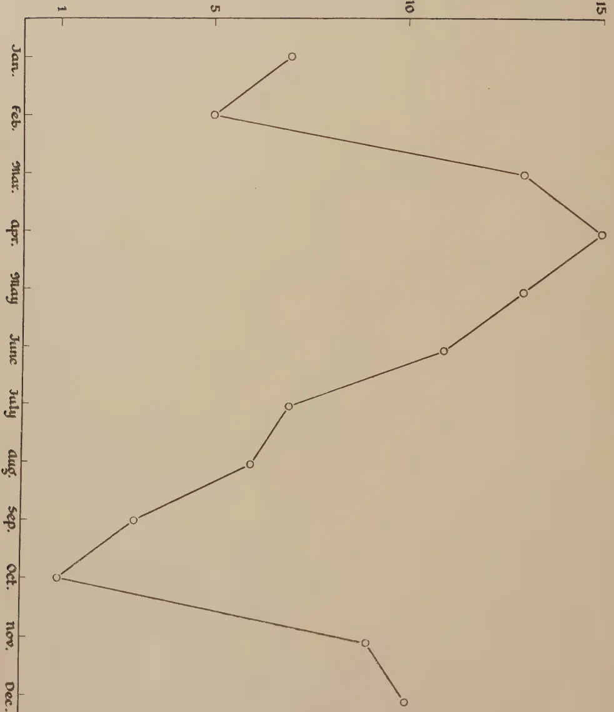
A line graph showing the number of cows over the course of a year. The vertical axis (y-axis) is labeled 'Number of Cows.' and has tick marks at 1, 5, 10, and 15. The horizontal axis (x-axis) lists the months of the year: Jan., Feb., Mar., Apr., May, June, July, Aug., Sep., Oct., Nov., and Dec. The data points are connected by straight lines, showing a seasonal trend. The number of cows starts at 5 in January, rises to 15 in April, and then gradually declines to 2 in November, before rising slightly to 3 in December.
| Month | Number of Cows |
|---|---|
| Jan. | 5 |
| Feb. | 5 |
| Mar. | 12 |
| Apr. | 15 |
| May | 13 |
| June | 10 |
| July | 8 |
| Aug. | 6 |
| Sep. | 4 |
| Oct. | 2 |
| Nov. | 2 |
| Dec. | 3 |
BRITISH COUNCIL OF THE ROYAL SOCIETY
379and others are too small or too big for the bull. With these, a travis has to be built to keep them steady : the height can be adjusted by erecting a platform to suit the individual animal. One service is enough but to be on the safe side two services are preferred.
The graph reproduced with this article shows how the service period is affected by climatic conditions at Peradeniya. The writer was in charge of the Farm School Dairy for ten years and prepared the chart from the records of one hundred cows served during this period.
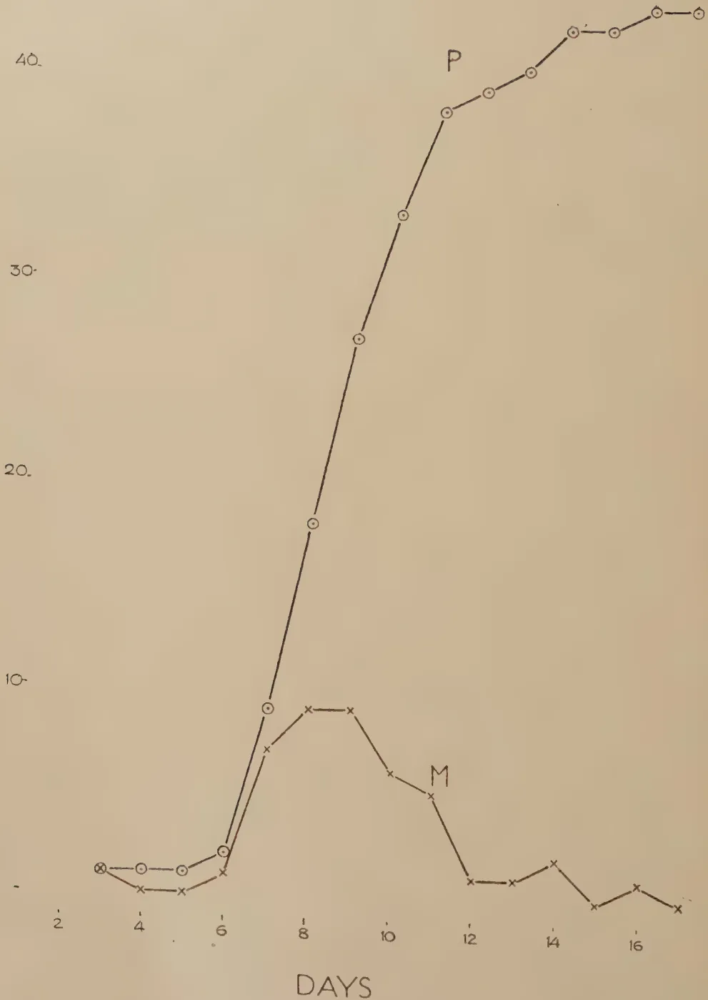
The graph displays two data series, P and M, over a period of 17 days. The Y-axis represents a numerical value from 0 to 40, and the X-axis represents time in DAYS from 2 to 17.
| DAYS | Series P (Circles) | Series M (Crosses) |
|---|---|---|
| 3 | 2 | 2 |
| 4 | 2 | 1 |
| 5 | 2 | 1 |
| 6 | 3 | 2 |
| 7 | 9 | 7 |
| 8 | 17 | 9 |
| 9 | 26 | 9 |
| 10 | 33 | 7 |
| 11 | 37 | 6 |
| 12 | 38 | 2 |
| 13 | 39 | 2 |
| 14 | 41 | 3 |
| 15 | 41 | 1 |
| 16 | 42 | 2 |
| 17 | 42 | 1 |
Block by Survey Dept. Clayton 8-1-39
381M. FERNANDO, Ph.D., B.Sc., D.I.C.,
RESEARCH PROBATIONER IN PLANT PATHOLOGY
IN July, 1937, an unfamiliar type of storage rot caused serious damage to a consignment of mangoes of the variety Chembattan, from the Farm School, Jaffna. The mangoes had been despatched to Peradeniya in connection with experiments which the division of Plant Pathology was conducting on the control of fruit diseases. Fig. 1 illustrates the course of the disease in this consignment. The upper curve, P, is a progress curve in which the total number of rotted fruits has been plotted against time, and has a sigmoid form. In the lower curve, M, the rate of rotting per day has been plotted against time. This mortality curve appears to conform to the normal type. The curves seem to be expressions of individual differences in susceptibility in a normal population of infected mangoes. Similar curves have been obtained by Kidd (1924) for the fungal invasion of stored apples.
In 38 of the 47 diseased fruits in the Jaffna consignment, infection occurred at the stalk end; in the remaining 9 fruits, infection was lateral. Similar figures were obtained by Mr. W. R. C. Paul, Agricultural Officer, Northern Division, with a parallel batch of 50 Chembattan mangoes stored at the Farm School, Jaffna. Forty of the rotted fruits exhibited stalk end infection, and in the rest infection was lateral.
In the case of stalk end rots, visible infection first appears on the ripe fruit as a slight darkening of the epicarp round the base of the stalk. The darkened area may be about 0.5 cm. across. This infected patch spreads with remarkable rapidity, and may cover an area 4 cm. in diameter within the next
38224 hours. At this stage the affected area appears water soaked and may exhibit a slight wrinkling of the epicarp. The ochraceous tawny-buckthorn brown (Ridgway, 1912) of the affected area contrasts sharply with the bright orange-yellow of the rest of the fruit. The margin of the invaded area is irregular but fairly clearly defined. The invaded portion lacks the firmness of the surrounding tissue. When the fruit is cut open, no striking difference in colour is observed between diseased and sound tissues, but there is a marked difference in texture. The rotted tissue exhibits an almost complete loss of coherence. The disease is essentially an affection of the ripe fruit. Invasion of green fruits has however occasionally been observed.
Rotted mangoes were sterilized superficially and isolations were made from the interior at the edge of the advancing rot. Twenty isolations of this type were made, and the fungus Botrydiplozia theobromae Pat. grew in every instance. Pathogenicity tests with this organism yielded positive results, and the pathogen was readily re-isolated from the inoculated material.
Su (1934) in Burma, found Diplodia natalensis Ev. associated with 8 per cent. of mango rots in a consignment kept in storage for shipment to England. As Nowell (1923) points out, there is little reason for separating Diplodia natalensis Ev. from Botrydiplozia theobromae Pat. It is accordingly probable that Su's isolation and the writer's pathogen fall within the limits of the same species, possibly with a perfect stage, as suggested by Stevens (1926), in Physalospora rhodina (Berk. and Curt.) Cooke.
Die-backs of mango stems in Barbados have been attributed by Bourne (1921) to Diplodia cacaoicola Hen., which Petch (1910) has demonstrated is identical with Botrydiplozia theobromae Pat.
Although the storage rot which forms the subject of this paper, has not hitherto been recorded from Ceylon, examination of invaded mangoes procured from the Municipal Market, Kandy, showed that the disease was of commoner occurrence
This image is a scan of a blank page. The background is a uniform light beige or tan color. There are a few very small, dark specks scattered across the surface, which appear to be scanning artifacts or dust particles. No text, lines, or other graphical elements are present.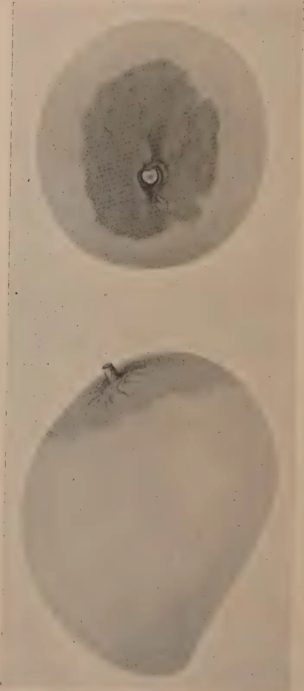
The image displays two circular cross-sections of a fruit, likely a tomato, arranged side-by-side. The left cross-section shows a large, pale, and somewhat irregular area of soft rot, with a small, dark, protruding structure at the top edge. The right cross-section shows a more distinct, darker, and more textured area of soft rot, with a small, dark, protruding structure at the top edge. The background is a light, neutral color.Soft Rot caused by Botryodiplodia Theobromae Pat.
383than was at first imagined, and strains of B. theobromae have been isolated from mangoes of the varieties Parrot and Papaw.
Microscopic examination of the rotted tissue revealed the fact that the disease was a true soft rot, accompanied by the secretion of protopectinase, the enzyme which dissolves the middle lamella of plant tissues. The cells of the invaded tissue had fallen apart and fungal hyphae were seen ramifying among the dead cells.
Estimations of the protopectinase activity of an extract of the rotted tissue were carried out using Brown's method (1915). The rotted tissue was squeezed through muslin and the extract was cleared by centrifuging. The extract has a pH value of 4.6. A range of hydrogen-ion concentrations was set up by the use of normal sulphuric acid and normal sodium hydroxide. Sound mango tissue of sufficient coherence was not available for the purpose of the tests. Discs of standard dimensions (0.5 mm. 2 cm.) cut out of the medullary tissue of a potato tuber were accordingly used. Table I records the average time for the complete disintegration of sets of 3 discs, at the various pH values. The reciprocal of this reaction time provides a measure of the protopectinase activity of the extract. The optimum pH value for enzyme action is seen to be in the neighbourhood of neutrality.
TABLE I
| pH Value | Reaction time in hours | |||
|---|---|---|---|---|
| 3.3 | .. | .. | .. | .. >6 |
| 4.0 | .. | .. | .. | .. 3.25 |
| 4.6 | .. | .. | .. | .. 2.08 |
| 5.5 | .. | .. | .. | .. 2.0 |
| 7.0 | .. | .. | .. | .. 1.92 |
| 8.5 | .. | .. | .. | .. 2.75 |
| 9.0 | .. | .. | .. | .. 3.83 |
Air temperature : 27°C.
384PATHOGENICITY OF THE FUNGUSPathogenicity tests were complicated by the difficulty of keeping the controls clean. It was found possible to induce infection of mangoes by placing the mycelium of the fungus on a freshly broken stalk. In the variety Chembattan this type of inoculation produced an average rot of gm. in 3 days. Invasion was much more rapid if the epicarp had been previously incised.
TABLE II| No. of Mango | Weight of Rotted Tissue in Grams | ||
|---|---|---|---|
| Inoculated with Chembattan strain of B. theobromae |
Inoculated with Parrot strain of B. theobromae |
Control | |
| 1 | 37.2 | 27.2 | 0.0 |
| 2 | 30.2 | 26.3 | 0.0 |
| 3 | 31.5 | 37.8 | 0.0 |
| 4 | 27.7 | 32.8 | 0.0 |
| 5 | 13.4 | 17.6 | 12.1 |
| 6 | 21.4 | 22.5 | — |
| Mean | 26.9 | 27.4 | 2.4 |
| t | 5 per cent. point |
1 per cent. point |
|
| For comparison of columns | |||
| 2 & 3 : 0.10 | 2.228 | — | |
| ” | 2 & 4 : 5.61 | — | 3.250 |
| ” | 3 & 4 : 6.38 | — | 3.250 |
The results of a typical pathogenicity test are recorded in table II. Two strains of B. theobromae were used, viz., the strain responsible for the damage in the Jaffna consignment and a strain isolated from diseased mangoes of the variety Parrot, obtained from the Municipal Market, Kandy. Each
385of the strains was inoculated into 6 mangoes of the variety Fibre. Inoculations were made through a wound at the stalk end. Five fruits were kept as controls. The inoculated fruits and controls were stored at a temperature of 26°C. 28°C., in a humid atmosphere under a bell jar. The weights of rotted tissue produced in 4 days by the 2 strains of the fungus are recorded in table II. The value of 't' for the comparison between the two strains is well below the 5 per cent. point. There is accordingly no significant difference in virulence between the two strains.
In view of the fact that infection by B. theobromae occurs almost exclusively by the stalk end, attempts at controlling the disease should aim at blocking this end against the entry of the pathogen. Dipping the fruits immediately after picking, in a standard copper fungicide to which a spreader had been added, failed to check the disease. The fungicide evidently did not provide effective cover of the stalk end. Continual exudation of the gummy substance from the cut end of the stalk appeared to interfere with the adhesion of the fungicide.
In a second series of experiments, the fruits were immersed in methylated spirits and the stalks broken off under the spirits almost flush with the epicarp. When the alcohol had evaporated off, the stalk ends were dipped in molten beeswax. The treatment gave effective control of the rot, but breaking off the stalk flush with the epicarp resulted in an undesirable oxidase reaction in the neighbourhood of the wound. Besides the application of wax which involved an appreciable area of the upper half of the fruit, affected the appearance of the fruit. The following modification of the above method appears to be commercially practicable. Mangoes should be picked with about a 5-inch length of stalk. The major portion of this stalk is cut off under methylated spirits, leaving about an inch still attached to the fruit. The cut end of the attached piece of stalk is then dipped up to a distance of about 0.5 in. in molten wax. As it is possible that deposition of spores of the pathogen on the fruits occurs in the orchard itself, the fruits should be subjected to this treatment immediately after picking.
386Banerjee, Karmarkar and Row (1934) attempted to control the fungal wastage of mangoes in storage by washing the fruit in a solution of fungicide. Five per cent. sodium chloride, 0.5 per cent. potassium permanganate, lime water and a formalin-phenol mixture were tested out. In the case of the formalin and phenol, the fungicidal wash was followed by immersion in molten paraffin wax with a view to providing the fruit with a thin, protective coat of wax. None of the above-mentioned treatments adequately checked fungal invasion. The fruits had been secured from the local market in India, and the inefficacy of the treatments may have been due to the fact that although there was no macroscopically visible invasion, infection and penetration by the pathogens had already occurred.
Strains of Botryodiplodia theobromae Pat. have been isolated from a soft rot of stored mangoes. The pathogenicity of two of the strains has been established.
The secretion of a vigorous protopectinase enzyme by the pathogen has been demonstrated.
Measures for controlling the disease are discussed.
The writer's thanks are due to Mr. M. Park, Plant Pathologist, for helpful advice during the course of the work and for valuable criticism of the manuscript.
Banerjee, B. N., Karmarkar, D. V. and Row, G. R. 1934.—Investigations on the Storage of Mangoes, Agric. and Livestock Ind. IV, pp. 36-53.
Bourne, B. A. 1921.—Fungoid attacks reported or observed. Rept. of the Dept. of Agric. Barbados, 1920-21, pp. 10-11.
Brown, W. 1915.—Studies in the Physiology of Parasitism—I. The Action of Botrytis cinerea. Ann. Bot. XXIX, pp. 313-348.
Fisher, R. A. 1932.—Statistical Methods for Research Workers. 4th Edition, London: Oliver and Boyd.
Kidd, M. N. 1925.—The Mortality Curve in a Population of Apples. Rept. Food Investigation Board, 1924. Department of Scientific and Industrial Research, London, pp. 43-46.
387Nowell, W. 1923.—Diseases of Crop Plants in the Lesser Antilles. London :
The West India Committee.
Petch, T. 1910.—On Lasiodiplodia. Ann. Roy. Bot. Gdns., Peradeniya, IV,
1907-1910, pp. 455-465.
Ridgway, R. 1912.—Colour Standards and Colour Nomenclature. Washington.
Stevens, R. E. 1926.—Two species of Physalospora on Citrus and other Hosts.
Mycologia, XVIII. pp. 206-217.
Su, M. T. 1934.—Report of the Mycologist, Burma, Mandalay for the year
ending 31st March, 1934. Rept. Dep. Agric. Burma, 1933-4, pp. 25-33.
Wardlaw, C. W. and Leonard, E. R. 1936.—The Storage of West Indian
Mangoes. Low Temperature Research Station, Memoir No. 3, Imperial
College of Tropical Agriculture, Trinidad.
THE tenth meeting of the Central Board of Agriculture was held at Peradeniya, in the Board Room of the Department of Agriculture at 2.30 p.m. on Thursday, 20th May, 1937.
Mr. E. Rodrigo, C.C.S. (Acting Director of Agriculture), presided and the following members were present :—Sir James P. Obeysekera, Messrs C. (Arulambalam, A. C. Attygalle, P. B. Bulankulame, Dissawa, Dr. R. Child Director, Coconut Research Scheme), Messrs R. G. Coombe, C. N. E. J. de Mel (Principal, Farm School), Wace de Niese, L. W. A. de Soysa, Dr. C. H. Gadd (Acting Director, Tea Research Institute), Messrs R. P. Gaddum (Chairman, Planters' Association of Ceylon), Bruce S. Gibbon, Col. K. D. H. Gwynn, Dr. J. C. Haigh (Economic Botanist), Dr. J. C. Hutson (Entomologist), Dr. A. W. R. Joachim (Agricultural Chemist), Messrs J. S. Kennedy (Director of Irrigation), S. M. K. B. Madukande, Dissawa, Mudaliyar S. Muttutamby, Messrs T. E. H. O'Brien (Director, Rubber Research Scheme), Graham Panditsekera, M. Park (Mycologist), S. H. F. Perera, Wilmot A. Perera, F. A. E. Price, H. W. Ranatunga, Marcus S. Rockwood, B. M. Selwyn, A. T. Sydney Smith, E. L. Spencer Schrader, R. H. Spencer Schrader, J. Tyagaraja (Chairman, Low-Country Products Association of Ceylon), Mudaliyar N. Wickremaratne, Messrs A. A. Wickremasinghe, Rev. Father L. W. Wickremasinghe, Mr. C. L. Wickremasinghe, C.C.S. (Land Commissioner), Mr. M. D. S. A. Wijayanayaka (Acting Government Veterinary Surgeon), Col. T. Y. Wright and Mr. W. C. Lester-Smith (Acting Secretary).
The following visitors were also present :—Messrs W. P. A. Cooke, G. Harbord, F. P. Jepson, E. J. Livera, W. R. C. Paul, R. C. Scott and G. V. Wickremasekera.
The following members intimated their inability to attend the meeting :—Messrs H. W. Amarasuriya, M.S.C., S. Armstrong, E. C. de Fonseca (Jr.), D. H. Kotalawala, M.S.C., A. B. Lushington (Acting Conservator of Forests), W. W. A. Phillips and G. C. Rambukpota, M.S.C.
The Chairman informed the Board that, at the suggestion of its Executive Committee, the new practice had been adopted of not publishing the minutes in The Tropical Agriculturist until they had first been approved by the members concerned. Printed draft copies for their approval had been circulated to
389all members and there would appear to be no necessity to issue reprints to members since they would be able to make the necessary amendments in their own copies. He hoped that this form of presenting the minutes would meet with their approval.
The Chairman said that Mr. Wilmot A. Perera had suggested certain corrections : one of these on page 5, paragraph 2, line 4 was that the words " He suggested " be amended to read " At the last meeting of the Kalutara District Agricultural Committee it was resolved." This suggestion was agreed to by the meeting. With regard to the suggested amendment of paragraph 2 on page 4 of the draft minutes, which Mr. Wilmot A. Perera contended did not represent the exact meaning intended, the Chairman intimated that as there were opposed opinions on this matter he would put it to the meeting whether the draft of this paragraph should stand or not. This was done and the meeting voted in favour of allowing this paragraph to stand as drafted, only Mr. Wilmot Perera dissenting.
With the one amendment, therefore, the draft report of the proceedings was put up for confirmation and was duly confirmed by the Board.
The Chairman called on Mudaliyar Wickremaratne to move the resolution standing in his name. Mudaliyar Wickremaratne pointed out the very great asset that rivers, springs, etc. were in Ceylon, where over 75 per cent. of the population depended upon agriculture for which this water was essential. He also pointed out how in olden times the Sinhalese Kings had done what they could to store water for the cultivation of the drier areas and to preserve the natural vegetation of the hills and forests to promote satisfactory weather conditions. Continuing, he pointed out that the removal of the vegetation led to erosion, the silting of the rivers, etc., and that slight droughts led to the drying up of the rivers and the breeding of mosquitoes in the pools which remained. Since submitting this motion, however, he understood the Director of Irrigation had had some regulations framed which had been placed before the Board for its consideration. Mudaliyar Wickremaratne then moved the following resolution which he commended to the consideration of the Board.
" That this Board considers that legislation should be introduced to prevent soil erosion and the silting of rivers, streams and water courses."
Mr. C. Arulambalam seconded the motion which was put to the meeting and accepted unanimously.
The Chairman then introduced for consideration by the Board the draft of certain regulations to amend the Irrigation Ordinance, No. 45 of 1917, which had been drawn up in pursuance of a previous resolution of the Board and the recommendations of the Soil Erosion Committee.
390The Director of Irrigation formally moved the adoption of the draft amendments, the provisions of which were entirely tentative. The object of these regulations was to protect elas (water courses) and paddy fields and to ensure that those who cleared land did not cause damage by so doing; the proposed measures being preventive and not penal. He said he felt the essential recommendation of the Soil Erosion Committee was summed up in the principle that the water should be kept on the land where it fell; therefore he was entirely against clean weeding. The object of the draft amendment was to give someone the power to ensure that before land was cleared, steps would be taken to grow protective cover crops or to adopt some secondary line of defence against surface run-off water.
Mr. F. A. E. Price seconded the adoption of the draft regulations.
The Chairman intimated that when it was suggested that the draft amendments should be considered by the meeting, there had not been time to circulate to them a memorandum which had been received from the Planters' Association of Ceylon on this subject. He considered it would be impossible for an assembly of the size of the Board to discuss the draft amendments item by item and that the best course would probably be to leave the matter to the consideration of a sub-committee to advise the Board with regard to the various points raised.
At the suggestion of Mr. R. P. Gaddum, supported by Mr. R. G. Coombe, the Board decided that the Executive Committee, with power to add to its numbers, should report on the proposed amendments and in due course submit its recommendations to the Board.
The Chairman inquired in view of the proposer of the resolution being unable to attend the meeting, whether any other member desired to move the motion on the agenda standing in the name of Mr. Armstrong. As no member offered to do so the Chairman declared this resolution withdrawn.
The Chairman stated that a memorandum on this subject had been circulated to all members for their consideration. This memorandum intimated that the Principal Collector of Customs had pointed out that a strict interpretation of the Ordinance prohibited the import, through ports other than Colombo and Talaimannar, of certain common necessities, such as paddy, dhall and other pulses, gingelly seed, chillies, etc., and that it was desirable to legalise their continued import through other ports with the least possible interference with trade and hardship to importers.
The memorandum further pointed out that it was considered desirable that all cotton seed imported into the Island should be fumigated at Colombo prior to its release by the Customs authorities. The Ordinance only authorized
391the fumigation of plants found to be diseased or attacked by insect pest and it was considered necessary to authorize the Director of Agriculture to enforce the fumigation of all imports of such plants as were likely to be carriers of disease or insect pests.
The memorandum also stated that it was proposed to recommend the rescinding of the measures prescribed for the control of the Coconut Caterpillar, since parasites were now being used and the cutting off and burning of all attacked coconut leaves was not advisable as it also destroyed any beneficial parasites present.
Certain aspects of the memorandum were discussed and Mr. C. Arulambalam suggested, in view of the importance of cotton seed as a cattle food and the cost of sending cotton to Colombo, that arrangements be made for its entry at one of the Northern Province ports and its fumigation there if this was necessary.
The Director of Agriculture agreed to ascertain what could be done in this connection.
The proposed amendments to the Plant Protection Ordinance were then approved by the meeting.
The Chairman stated that his memorandum containing the various proposals had been circulated to all members and, in addition, further memoranda on the subject were also tabled. He formally moved the approval of the various proposals set out in the memorandum he had submitted as the Director of Agriculture.
After some discussion on these proposals, Mr. R. P. Gaddum said he feared some members were confusing questions of principle with those of policy. The memorandum of the Director of Agriculture set out a policy for consideration by the Board and he thought that the best way of dealing with this complicated and very exhaustive scheme would be for a Committee to investigate it and prepare one comprehensive report, instead of the three or four memoranda which were before the meeting. He considered if this were done and the report circulated among the members of the Board, they would be better able to consider the subject in its proper perspective and present the matter in clear-cut issues to the next meeting of the Board.
Mr. R. H. Spencer Schrader suggested that the proposals be referred to a small sub-committee with the Director of Agriculture as Chairman.
The Chairman said he would prefer to be excluded from such a Committee since the proposals were his own. He would, however, appear before the Committee and give any information or explanatory details they desired.
392After some discussion, the Board decided that a Committee of five members be appointed, with power to co-opt two or three additional members later if necessary, the selection of the Committee to be left in the hands of the Chairman. Further, that this Committee should consider the memorandum of the Director of Agriculture on the livestock industry, co-ordinate the various views set out in the other memoranda, and present the matter in clear-cut issues to the next meeting of the Central Board.
The Chairman, in introducing this subject said that Bulletin No. 53 of the Rubber Research Scheme (Ceylon) and a memorandum on the control of this disease had been tabled. The views of the Board were desired as to whether the proclamation notifying Oidium a declared disease under the Plant Protection Ordinance should be rescinded. He called upon the Controller of Plant Pests to express his views on the matter.
Mr. W. C. Lester-Smith (Controller of Plant Pests) stated that Oidium was proclaimed a declared disease under the Ordinance at the request of the Rubber Research Board solely to facilitate the sulphur-dusting campaign carried out by the Rubber Research Scheme in the Central Province. As this work had now been completed and the Bulletin tabled contained a complete report on the subject, he considered that the rescinding of the proclamation could now be recommended.
Mr. T. E. H. O'Brien (Director, Rubber Research Scheme) endorsed the above views but pointed out that the Oidium Committee (of the Rubber Research Board) which was appointed to consider the control of this disease, had made the following recommendation:—
“A District Oidium Committee, consisting of representatives of the local Planters' Association and the District Agricultural Committee, should be appointed in districts which are seriously affected by Oidium to consider the advisability of recommending that the disease be declared a pest in the area concerned or any portion thereof.”
Mr. O'Brien added that Oidium was a proclaimed disease in the Chief Headmen's Divisions in which the demonstrations of sulphur-dusting had been carried out and he considered it a mistake to allow this notification to remain in force. He was of the opinion that there should be some organization, such as the Committees suggested, to recommend to Government the proclamation of Oidium as a declared disease in the districts where it was sufficiently severe.
Mr. R. G. Coombe gave notice that he proposed to move the above recommendation regarding the formation of District Oidium Committees at the next meeting of the Central Board of Agriculture.
393The Board then approved with one dissentient vote the suggestion of the Chairman that the proclamation of Oidium as a declared disease be allowed to remain but that the notification of the areas declared infested be rescinded.
Mr. L. W. A. de Soysa stated that at the February meeting of the Executive Committee of the Central Board, some of the working difficulties of the Divisional Agricultural Associations had been considered. One of the difficulties with which they had to contend was said to be the fact that many of the members of these Associations were unable to attend the meetings, owing to their inability to defray their travelling expenses. The Executive Committee had been of the opinion that members should be reimbursed their out-of-pocket expenses so that better attendances at meetings should be ensured and in pursuance of this view they had passed the following resolution which was recommended to the Board for consideration :—
“That in order to enable the Divisional Agricultural Associations to function Government should provide payment at the rate of Rs. 2.50 per member to cover travelling expenses.”
Mr. Graham Pandittesekera seconded the resolution. After some further discussion the following amended resolution was moved by Mr. F. A. E. Price, seconded by Mr. E. L. Spencer Schrader, accepted by Mr. L. W. A. de Soysa and passed by 15 votes to 6 :—
“The Central Board of Agriculture considers that, in order to enable Divisional Agricultural Associations and District Agricultural Committees to function and to prevent hardship to working members, Government should provide payment at a rate not to exceed Rs. 2.50 per member to cover travelling expenses worked out on a mileage basis.”
The Chairman stated that copies of the observations of Mr. S. M. K. B. Madukande, Dissawa, had been circulated to all members of the Board for their consideration and he asked the Dissawa whether he had any further comments to make on this subject.
Mr. Madukande then stressed the fact that he considered the respective advisory bodies, namely the Divisional Agricultural Associations, the District Agricultural Committees and the Central Board should all form a co-ordinated line of approach to the Ministry of Agriculture and Lands. In this way he considered that matters of small importance could be dealt with locally, only matters considered of more importance or more general application being passed on to the body representative of the wider area. In this way only the more important resolutions would be sent to the Ministry so that matters
394would be viewed more in their proper perspective. Practicable resolutions from one Association would be referred back by the Committee concerned to all the other Associations it represented and the ultimate decision of the Committee, if favourable, referred to the Board and by the latter to the Ministry, instead of direct as at present.
The opinion was also expressed that in the case of any subject which a Divisional Association thought a District Committee should consider or which a District Committee thought the Central Board ought to discuss, the Association or Committee concerned should delegate its representative to the higher body to move the necessary resolution.
The Chairman indicated that he thought it was preferable that the procedure at present in force should be allowed to stand and Mr. Arulambalam and Mr. Pandittesekera supported this view.
The general opinion being to this effect, Mr. Madukande accepted this decision.
Mr. C. Arulambalam moved the following resolution standing in his name :—
“The Central Board of Agriculture is of opinion that, with a view to the scientific development of the tobacco industry in the Jaffna district an experiment station should be established by Government at an early date on a suitable location within the District to be solely devoted to tobacco, and further recommends the favourable consideration of the matter to the Executive Committee of the Ministry of Agriculture and Lands.”
Speaking on behalf of this resolution Mr. Arulambalam read some notes he had compiled on the history and development of the Jaffna tobacco industry, and pointed out the suitability of the district for work on this crop and the desirability of commencing continuous research work on this one crop, as was being done in the case of tea, rubber and coconuts.
The Chairman stated that Government had had this matter under consideration for some time and had recently decided to appoint an officer who had special knowledge of the cultivation, manufacture and exploitation of tobacco. He was to be entrusted with this work and made responsible to Government for it as permanently as was possible. The Secretary of State had already been requested to select the best possible person he could obtain. When he arrived it would be necessary to give him the past history of the tobacco industry, let him go round the country, and adopt such measures as he considered advisable for the development of the industry. The Chairman considered they should not tie the expert down to work in specified
395areas or in a particular way, but that he should be given a free hand to develop the tobacco industry in the manner he thought most advisable.
Mr. Arulambalam agreed to withdraw his resolution in view of the statement made by the Chairman.
Mr. Sydney Smith suggested that in future when members had prepared lengthy notes on any subject, it would be extremely useful if they submitted them to the Secretary beforehand so that they could be circulated to the members who would then have time to study the subject and could come prepared to discuss it.
The Chairman intimated that this was a good suggestion which they might well consider.
Mr. Madukande, on being called upon to move his resolution, intimated that at the previous meeting of the Board he had pointed out how essential buffaloes were for paddy cultivation in the dry zones and that there was a permanent shortage of them for agricultural work. When the villagers commenced their cultural operations they had the greatest difficulty in borrowing or hiring buffaloes for this work. This difficulty was due to the shortage of buffaloes and had led to a bad practice, which was prevalent among the villagers, of stealing ploughing buffaloes from distant villages, keeping them in hiding and using them for their own work. The shortage was also one of the chief reasons why paddy cultivation was not completed by the proper time. He said that the main cause of the shortage of the buffaloes was their sale for slaughter, a large number being so disposed of daily for meat in Colombo and other places and practically all these buffaloes came from the dry zones. Cattle dealers went round the villages and bought all the buffaloes in good condition at attractive prices, and since most of the villagers in the Wanni area were poor, heavily indebted and always in need of money they did not hesitate, when pressed, to sell even their last buffalo regardless of future consequences. He considered that the simplest and only possible way of preventing this practice was to prohibit the slaughter of buffaloes for purposes of meat. While such a measure would affect the meat market to some extent and the villagers might have reason to complain of hardship, by it depriving them of one of their main sources of revenue, the remedy lay in the slaughter of neat cattle instead of buffaloes. As he had also mentioned at the previous meeting that villagers had more neat cattle than they could look after and since they did not get much profit out of them they did not look after them properly. He thought if the slaughter of buffaloes was stopped, that the butchers and their agents would turn their attention to neat cattle, removing them for fattening and sale and so revive a trade that had almost disappeared. By prohibiting the slaughter of buffaloes, a demand for neat cattle would be created which would lead to an endeavour to
396improve the breed. He commended the following resolution for consideration by the Board :—
“ That with a view to maintaining the supply of buffaloes required for agricultural purposes and to induce the villagers to look after their neat cattle properly and so improve the breed this Board recommends Government to prohibit the slaughter of buffaloes for meat and thus encourage the slaughter of neat cattle instead.”
Mudaliyar N. Wickremaratne seconded the resolution.
Mr. Wilmot A. Perera suggested that this resolution be referred to the Livestock Industry Committee which they had earlier agreed should be appointed to consider the memorandum of the Director of Agriculture. This suggestion was carried unanimously.
Mudaliyar S. Muttutamby, in speaking to the agenda item standing in his name, referred to the resolution, moved by Mudaliyar Wickremaratne at the fifth meeting of the Board, recommending that Government fix a minimum price for paddy. That motion had been passed almost unanimously, but so far nothing had been done. He stressed the fact that the paddy cultivators were the poorest people in the country and realised practically nothing from their labour while other labourers earned about Rs. 1.25 a day. He desired to impress on the Board that Government should either do something for the paddy cultivator or say definitely that it was unable to do anything, so that he might know how he was placed. If the paddy cultivator only knew that Government was unable to do anything for him, he could put his labour to other uses and earn more ; the only return he got at present was his rice which kept him from starvation, but in these days there was not sufficient inducement for a man to stick to this one occupation.
Mudaliyar Muttutamby then moved the following resolution :—
“ That this Board requests Government to expedite a decision to give relief to the paddy cultivator by fiscal measures.”
Mr. Madukande seconded the resolution which was carried unanimously.
The Chairman said that since this was the last meeting of the existing Board which had served for the constituted period of three years, he would like to thank the members for their advice and assistance and for the business-like manner in which they had carried out the proceedings. He intimated that a new Board would be formed on which he hoped most of the present members would serve and render the same valuable service they had previously done.
Before closing the proceedings he wished to congratulate Mr. P. B. Bulankuiame on the honour of the Dissawaship which had been conferred
397on him on the occasion of the Coronation of His Majesty the King. The members of the Board heartily endorsed the Chairman's expressions and Mr. Bulankulame thanked the Chairman and the members for their congratulations.
Col. T. Y. Wright moved a hearty vote of thanks to the Chairman in appreciation of his services during his tenure of office and for the manner in which he had conducted the meetings of the Board. This was seconded by Mr. Arulambalam and carried with unanimous acclamation.
The meeting terminated at 5.15 p.m.
W. C. LÉSTER-SMITH,
Acting Secretary, Central Board of Agriculture
Minutes of the thirty-ninth meeting of the Board of Management held in Room No 202, New Secretariat, Colombo, on Friday, October 15, 1937, at 10.30 a.m.
Present.—Mr. E. Rodrigo, C.C.S., Acting Director of Agriculture (in the Chair), Messrs C. H. Collins, C.C.S., (Treasury Representative), S. O. Canagaratnam, M.S.C., A. Ekanayake, D. D. Karunaratne, J.P., Wace de Niese, L. J. M. Peiris, G. Pandittesekera, J.P., U.P.M., J. Tyagaraja, M.A., LL.B.
Dr. R. Child, Director of Research, acted as Secretary.
Apologies for absence were received from Mr. O. B. M. Cheyne and Mr. S. Samarakkody, M.S.C.
The minutes of the previous meeting held on September 3rd, 1937, which had been circulated to members, were confirmed.
The late Gate Mudaliyar A. E. Rajapakse.—The Chairman, in moving a vote of condolence upon the death of Gate Mudaliyar A. E. Rajapakse, referred to the continued services of the late Gate Mudaliyar to the Scheme. Having played a prominent part in the preliminary discussion which led to the foundation of the Coconut Research Scheme, Gate Mudaliyar Rajapakse had been nominated a member of the original Board of Management, together with the late Sir Marcus Fernando, to represent the Low-Country Products Association, on February 7, 1929. He had served on the Estate Sub-Committee which selected Bandirippuwa Estate as the site of the Scheme's Research Station in 1930 and on the Building's Committee appointed on February 12, 1931, to deal with all proposed buildings on the Estate. This latter committee continued to meet until the completion of the Laboratory Buildings in 1933, and the Gate Mudaliyar had done useful service thereon.
In recent years, in spite of failing faculties, the late Gate Mudaliyar had always maintained an active interest in the Scheme; out of 38 meetings of the Board from 1929 to 1937, he had attended 26, the last as recently as September 3, 1937, only a fortnight before his death. The Board had
399lost its oldest member, in fact the last remaining foundation member, and would greatly miss him. The vote of condolence was carried in silence, all standing.
The Chairman extended a welcome to Mr. L. J. M. Peiris, who had been nominated to the Board by the Low-Country Products Association to fill the vacancy caused by the death of Gate Mudaliyar A. E. Rajapakse.
The revised estimates for 1937 and the Estimates for 1938 were passed.
The Statement of Receipts and Payments for the quarter ended September 30, 1937, was approved.
Transfer of Fixed Deposit.—The Chairman reported that Fixed Deposit No. 74/93 for Rs. 50,000.00 with the National Bank of India, Ltd., Kandy, which matured on September 24, 1937, had been transferred to the Scheme's current account with accrued interest at 2%, Rs. 1,000.00. The object was to have available in liquid form sufficient funds to effect the purchase of Ratmalagara pending the receipt of the proposed loan from Government. The Board approved.
Travelling.—The Board formally approved of the payment from the Travelling Vote of an additional sum of Rs. 8.00 to Mr. R. K. S. Murray on account of his visit to Bandirippuwa, this representing subsistence allowance additional to the mileage sanctioned at the previous meeting.
Part IIA of the Annual Report.—The Report of the Director of Research on the General Office and Laboratories was tabled and was accepted by the Board.
Action taken by the Buildings Sub-Committee in connection with proposed extension to buildings has already been recorded and also the Sub-Committee's recommendation to delete the item Copra Store for the present.
Consideration of further action taken by the Sub-Committee at the tenth meeting held on October 11, 1937, was deferred until the next Board meeting, when the minutes of the Sub-Committee meeting would be in the hands of Board Members.
The Chairman reported action taken since the last meeting. Messrs F. J. & G. de Saram, acting on behalf of the Scheme, had reported that the title was satisfactory. Before the transfer could be effected it was necessary for the Sri Chandrasekere Trust to make applications to court for authority
400to part with their interest. Messrs de Saram had been asked to continue with the negotiations for transfer. The Chairman added that, as he had mentioned previously by transfer of Fixed Deposits to Current Account sufficient liquid funds were available to effect the purchase pending the receipt of the loan from Government. The Board concurred in the action taken.
The Estate Progress Reports for August and September, 1937, were approved by the Board.
The Director of Research reported that he had received a communication from the organizers of the above exhibition, asking him to be a Vice-Patron of this exhibition. As the letter was addressed officially he was referring it to the Board. The senior officers had also been asked to assist on the committee of the exhibition in their private capacity.
The Board considered that there was no objection to members of the Staff serving on such committees in their private capacity, or of the Director of Research being a Vice-Patron. It was decided, however, that the Board could not agree to pay travelling expenses for attendance at such committee meetings.
401The Rothamsted Experimental Station Report 1936.—pp. 294. Price 2/6d. Obtainable from the Secretary.
THE Annual Report of the Rothamsted Experimental Station fills a special place in the literature of science applied to agriculture. It reaches research workers in soil science and plant nutrition all over the world, and is of special interest to scientific workers, advisory officers and students in this country. It outlines the present position of the various investigations on soil and fertiliser problems conducted at the Station, and gives in full the yield figures for 1936 obtained from some 120 experiments carried out at Rothamsted, Woburn and numerous commercial farms in various parts of England.
An important section summarises the results obtained in experiments on soil cultivation during the last 11 years. Contrary to the widely accepted view the results obtained up to the present indicate that under the conditions prevailing at Rothamsted, yields are not greatly dependent on the particular cultivation methods used, so long as the work is done at the right time. These trials must be continued but the figures already available are worth careful study. A preliminary discussion of the effects of fallowing on the yields of wheat on Broadbalk Field brings out the striking difference of behaviour between the starved and the fully manured plots. When the yield is poor, fallowing produces a large increase in yield; in the presence of nitrogenous manures the effect is much less and may even be harmful in the first year following. The benefit due to fallow appears to be only of one year duration as measured in the wheat crop. Experiments on the incorporation of raw straw with an accompanying dose of artificials show that handled in this way straw has so far produced much the same effect as dung or Adeo Compost. Other sections of importance deal with experiments on dried poultry manure and the effect of fertilisers on sugar-beet.
Long period surveys of the work of certain departments have been a feature of recent reports. This year the summaries deal with Field Experiments, Fermentation, Insecticides and Entomology.
402ANIMAL DISEASE RETURN FOR THE MONTH
ENDED NOVEMBER, 1937
| Province, &c. | Disease | No. of Cases up to date since Jan. 1st, 1937 | Fresh Cases | Recoveries | Deaths | Balance III | No. Shot |
|---|---|---|---|---|---|---|---|
| Western | Foot-and-mouth disease | 1,335 | 275 | 1,286 | 7 | 42 | .. |
| Rabies | 16 | 1 | .. | .. | .. | 16 | |
| Haemorrhagic Septicaemia | 2 | 2 | .. | 2 | .. | .. | |
| Foot-and-mouth disease | 641 | 18 | 609 | 16 | 16 | .. | |
| Colombo Municipality | Anthrax | 12 | .. | .. | 12 | .. | .. |
| Rabies | 26 | 1 | .. | 26* | .. | .. | |
| Blackquarter | 1 | .. | .. | 1 | .. | .. | |
| Trypanosomiasis | 1 | .. | .. | 1 | .. | .. | |
| Foot-and-mouth disease | 2 | .. | 2 | .. | .. | .. | |
| Cattle Quarantine Station | Anthrax | 104 | 7† | .. | 104 | .. | .. |
| Foot-and-mouth disease | 98 | 11 | 92 | 2 | 4 | .. | |
| Central | Piroplasmosis | 13 | 3 | 10 | 1 | 2 | .. |
| Blackquarter | 2 | .. | .. | 2 | .. | .. | |
| Anaplasmosis | 1 | .. | 1 | .. | .. | .. | |
| Foot-and-mouth disease | 582 | 1 | 581 | .. | 1 | .. | |
| Southern | Foot-and-mouth disease | 1,474 | .. | 1,437 | 37 | .. | .. |
| Northern | Foot-and-mouth disease | 61 | .. | 61 | .. | .. | .. |
| Eastern | Haemorrhagic Septicaemia | 121 | 30 | 19 | 102 | .. | .. |
| Foot-and-mouth disease | 34 | .. | 34 | .. | .. | .. | |
| Rabies | 5 | 1 | .. | 2 | .. | 3 | |
| North-Western | Piroplasmosis | 1 | .. | 1 | .. | .. | .. |
| Haemorrhagic Septicaemia | 23 | .. | .. | 23 | .. | .. | |
| Goat pox | 26 | .. | 23 | 3 | .. | .. | |
| Foot-and-mouth disease | 61 | .. | 61 | .. | .. | .. | |
| Foot-and-mouth disease | 132 | .. | 126 | 6 | .. | .. | |
| Uva | Anthrax | 3 | 1 | .. | 3 | .. | .. |
| Rabies | 6 | .. | .. | .. | .. | 6 | |
| Pleuro-pneumonia | 15 | .. | 7 | 8 | .. | .. | |
| Foot-and-mouth disease | 525 | 10 | 449 | 65 | 11 | .. | |
| Sabaragamuwa | Rabies | 2 | .. | .. | .. | .. | 2 |
| Piroplasmosis | 4 | .. | 3 | 1 | .. | .. |
*All destroyed
†Among Sheep and Goats
Department of Agriculture,
Peradeniya, December 17th, 1937
G. B. DE SILVA,
Acting Government Veterinary Surgeon
| STATION | TEMPERATURE | HUMIDITY | Amount of Cloud | RAINFALL | ||||||
|---|---|---|---|---|---|---|---|---|---|---|
| Mean Maximum | Difference from Average | Mean Minimum | Difference from Average | Day | Night (from Minimum) | Amount | No. of Rainy Days | Difference from Average | ||
| ° | ° | ° | ° | % | % | Ins. | Ins. | |||
| Colombo .. | 84.7 | -0.1 | 74.1 | +0.6 | 80 | 95 | 7.9 | 18.00 | 24 | + 5.66 |
| Puttalam .. | 85.0 | 0 | 73.7 | +0.5 | 84 | 98 | 7.8 | 15.12 | 23 | + 5.16 |
| Mannar .. | 83.4 | -1.3 | 75.4 | -0.1 | 84 | 93 | 8.6 | 12.26 | 22 | + 2.41 |
| Jaffna .. | 82.6 | -1.0 | 74.6 | 0 | 85 | 90 | 9.0 | 17.68 | 22 | + 1.36 |
| Trincomalee .. | — | — | — | — | — | — | — | — | — | — |
| Batticaloa .. | 83.8 | -0.2 | 74.9 | +0.6 | 84 | 95 | 7.9 | 11.33 | 21 | - 4.55 |
| Hambantota .. | 85.4 | +0.4 | 74.6 | +0.9 | 80 | 93 | 6.8 | 8.56 | 18 | + 0.78 |
| Galle .. | 83.1 | -0.3 | 74.9 | +0.9 | 80 | 90 | 8.0 | 15.03 | 21 | + 3.89 |
| Ratnapura .. | 86.8 | -0.7 | 72.9 | +0.6 | 82 | 95 | 7.9 | 14.31 | 24 | - 0.69 |
| Anuradhapura .. | 84.2 | -1.2 | 72.1 | +0.3 | 87 | 98 | 8.8 | 13.44 | 26 | + 1.90 |
| Kurunegala .. | 85.6 | -1.3 | 72.2 | +0.2 | 82 | 95 | 7.2 | 12.85 | 26 | - 0.67 |
| Kandy .. | 83.2 | -0.3 | 68.9 | +0.7 | 79 | 95 | 7.2 | 12.92 | 23 | + 1.71 |
| Badulla .. | 79.6 | +0.6 | 66.4 | +0.7 | 82 | 97 | 7.1 | 11.22 | 24 | + 1.20 |
| Diyatalawa .. | 74.5 | +0.5 | 61.4 | +1.4 | 78 | 89 | 8.3 | 11.21 | 25 | + 1.02 |
| Hakgala .. | — | — | — | — | — | — | — | — | — | — |
| Nuwara Eliya .. | 68.0 | -0.2 | 53.2 | +2.2 | 87 | 94 | 8.8 | 8.30 | 26 | - 1.21 |
The rainfall for November was in excess over the greater part of the island. Excess of 5.10 inches were reported from a number of stations, distributed well over the island. The only excesses over 10 inches were 13.87 inches at Kayts, 11.85 at Murunkan, 10.49 at Vincit Estate and 10.24 at Maggona. The only appreciable area reporting deficits was covered by lines joining Batticaloa, Badulla, Kurunegala, Anuradhapura and Allai. The largest negative offset of 6.20 inches was reported from West Haputale, while 7 other stations chiefly in the eastern half of the island experienced deficits of over 5 inches. The highest total for the month was 28.75 inches at Kayts, while other stations with over 25 inches were Vincit Estate, Marambekande, and Jaffna.
There were altogether 26 daily falls of 5 inches and above reported during the month, the majority of these occurring on the rainfall day 27-28th. The largest fall was 8.27 inches at Maggona on this day.
November proved to be a rainy month, the rain being more or less persistent throughout the period. Increased rainfall during the period 11-14th was attributable to the influence of a depression that formed in the Bay of Bengal to the east of the island, while the widespread heavy rain that fell on the 27-28th was due to unsettled conditions that favoured the formation of another depression, which however failed to materialise.
Temperatures did not depart markedly from normal, while humidity and cloud amount were generally above normal. Barometric pressures were consistently below average.
D. T. E. DASSANAYAKE,
Actg. Supdt., Observatory
This image is a scan of a blank page. The background is a uniform light beige or tan color. There are a few very small, dark specks scattered across the surface, which appear to be scanning artifacts or dust particles. No text, lines, or other graphical elements are present. This image is a scan of a blank page. The paper has a light beige or cream-colored tint. There are several small, dark specks scattered across the surface, which appear to be scanning artifacts or dust particles. No text, lines, or other markings are present on the page. This image shows a blank, aged page with a light beige or cream-colored background. The surface has a subtle texture and contains several small, dark specks and faint smudges, likely due to dust or the age of the paper. There is no text or other content on the page. A small, rectangular, light-colored label or sticker is positioned in the bottom left corner of the page. The label has a slightly textured appearance and contains some faint, illegible markings or text. The rest of the page is blank and has a light beige or cream color with a subtle, mottled texture.